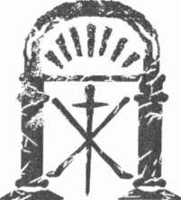

Tapınak
Duvardan aldığı fotoğrafı ceketinin altından çıkarıp tam karşısına yerleştirdi ve zamanın içinde donmuş siyah-beyaz figürleri inceledi. Sonra bakışlarını kartların çok renkli imgelerine çevirdi.
Bir an bakışları masmavi gözleri, gür siyah saçlarıyla tarotun tüm simgelerini kendisinde toplayan Büyücü kartına takıldı. Yakışıklı bir erkek ama güvenilir mi?
Başka bir fikir aklında yeşerirken ensesinde başlayan ürperti helke-ni iğinden aşağıya kadar indi. Olabilir mi? Büyücü' yü bir kenara bıraktı.
1 numaralı kart olan Joker i alıp fotoğrafa yaklaştırdı. İkisini yan yana görünce Mösyö Vernier olduğundan hiç kuşkusu kalmadı. Aynı güler yüz-lü ifade, ince beden, siyah bıyıklar...
II numaralı kart Başrahibe idi. Madam Lascombe açık yakalı gece tuvaleti giymiş ve nazik, solgun, dalgın bir ifadeyle ona bakıyordu. Meredith bakışlarım aşağıya kaydırınca Şeytanın ayaklarına zincirlenmiş
Aşıklar diye adlandırılan iki figürü gördü.
Son olarak VIII numaralı Güç adlı kart: Matmazel Leonie Vernier.
Meredith gülümsedi. Sanki bu kızı tanıyormuş gibi bu kartla arasında bir bağ olduğunu hissediyordu. Bir bakıma Leonie, hayalinde canlandırdığı Lilly Debussy'ye benziyordu. Gerçi Leonie daha gençti ama aynı çocukça masum bakışlar, aynı bakır rengi gür bukleler ciddi biçimde toplanmasına karşın, kartta omuzlarına kadar dökülüyordu. Kameranın objektifine aynı ifadeyle dimdik bakıyordu.
Bir algılama kırıntısı bilinçli akimin yüzeyi altında bir an dalgalandı
•una Meredith farkına varmadan önce yok oldu.
Dikkatini fal sırasında açılan diğer Büyük Arkana kartlarına verdi: Şeytan, Kule, Ermiş, İmparator. Hepsini teker teker incelerken kendisini bulunmak istediği noktaya yaklaştırmak yerine uzaklaştırmakta oldukları hissine kapıldı.
Arkasına yaslanınca antika iskemle gıcırdadı. Ellerini başının arkasında bitiştirip gözlerini kapattı.
Göremediğim şey nedir?
Düşüncelerinin fal baktırdığı ana kaymasına izin verdi. Laura'nın sözleri belirli bir düzen olmadan akarken birtakım modeller oluşturuyordu.
325
Kate Mosse
Oktavlar. Şu sekizler.
Sekiz tamamlamanın, başarılı sonuçların rakamıydı. İşe karışmalar, engeller ve çelişkiler hakkında açık bir mesaj veriyordu. Eski destelerde Güç ve Adalet kartları sekiz rakamını taşıyordu. Adalet ve Büyücü kartlarında yan yatmış sekize benzeyen sonsuzluk simgesi vardı.
Müzik her şeyi birbirine bağlıyordu. Aile geçmişi, Bousquet Tarot destesi, Vernier kardeşler, Paris'te bakılan fal, notalar... Defterini karıştırıp aradığı ismi, tarotu müzikle bağdaştıran Amerikalı iskambil kâğıdı falcı-
sının adını buldu. Dizüstü bilgisayarını açtı ve bağlantının kurulmasını sabırsızlıkla bekledi. Sonunda arama kutusu ekrana geldi. Meredith, PAUL
FOSTER CASE adını yazdı. Birkaç dakika sonra sitelerin listesi ekranda göründü.
Ayrıntılı Wikipedia sayfasını açtı. Amerikalı Paul Foster Case, nehir gemilerinde piyano, vodvil sahnelerinde org çalarken 1900'lerin başların-da kartlara ilgi duymaya başlamıştı. Otuz yıl sonra Los Angeles'ta BOTA adıyla bilinen Adytum Yaratıcıları adlı kendi tarot sistemini tanıtmak için bir organizasyon kurmuştu. BOTA'nm en ayırıcı özelliği; dönemin tüm gizli öğretiler sistemleri gizlilik ve seçkinlik fikrine dayanırken, Case'in kendi felsefesini halka açıklamasıydı. Ayrıca sistemin etkileşim olanağı vardı. Öteki destelerden farklı olarak BOTA kartları siyah-beyazdı ve her kullanıcının kendi isteği doğrultusunda boyayarak kendi damgasını vurması fikrini taşıyordu. Böylece tarot kartları ABD'nin her yerine yayıldı.
Case'in başka bir buluşu ise, müzik notalarıyla belirli Büyük Arkana kartları arasında bağlantı kurmasıydı. Sanki yalnızca ikisi sıradanlığın dı-
şında duruyormuş gibi, XX numaralı Güneş ve IX numaralı Ermiş kartları dışında kalanlar belirli notalara bağlanmıştı.
Hangi kartların hangi notalarla birlikte olduğunu gösteren piyano klavyesi çizimine baktı.
Kule, Mahkeme ve imparator C (do) notasına bağlıydı; Şeytan A (la) notasıyla bağlantılıydı; D (re) notası ise Aşıklar ve Güç kartlarına bağlanmıştı; Büyücü ile numarasız bir kart olan Joker E (mi) notasıyla bağlantı-
lıydı.
C-A-D-E. Domaine de la Cade.
326
Tapınak
Kendisini kandırmaya çalışıyormuş gibi gözlerini ayırmadan ekrana bakıyordu.
Belirli Büyük Arkana kartlarıyla bağlantılı olan C-A-D-E notaları hemen ortaya çıkmıştı.
Üstelik Meredith tam gözünün önünde duran başka bir bağlantıyı da fark etmişti. Kendisine miras kalan Tapmak 1891 adlı piyano notası-
na uzandı. Artık ezbere biliyordu: kırk beş mezür, tam ortada temponun değişmesi, stili ve karakterinin on dokuzuncu yüzyıl bahçelerini ve beyaz giysili kız çocuklarını çağrıştırması... Debussy, Satie ve Dukas'ın müzik-lerinin yankısı.
A, C, D, E notalarının üzerine kurulmuştu.
Meredith bir an elindeki işi unutup, parmaklarını hayali piyano tuşları üzerinde gezdirdi. Melodide yalnızca A, C, D, E notaları vardı. Son yarım arpej ve uçup giden son akor...
Arkasına yaslandı. Elbette her şey birbiriyle bağlantılıydı.
Ama eğer bir anlamı varsa, ne olabilir?
Bir an içinde Milvvakuee'ye lise son sınıfa, aynı şeyi defalarca yine-leyen Bayan Bridge'in ileri müzik dersine geri gitti. Dudaklarına bir gülüş
yerleşti. "Bir oktav, on iki artı bir kromatik tondan oluşur." Öğretmeninin sesi beyninde yankılanıyordu. "Yarım tonlar ve bütün tonlar diyatonik'*'
skalamn yapıtaşlarıdır. Diyatonik skalada sekiz, pentatonik skalada beş
ton vardır. Diyatonik skalamn birinci, üçüncü ve beşinci tonları temel a korların yapıtaşlarıdır ve kusursuzluğun, güzelliğin denklemidir."
Meredith anılarının düşüncelerine yol göstermesine izin verdi. Müzik ile matematik, rastlantıları değil bağlantıları araştırmak... Arama motoruna FIBONACCI yazdı. Ekranda yeni sözcükler belirdi. 1202 yılında Fibonacci adıyla bilinen Pisa'lı Leonardo rakamların bir dizi oluşturduğu bir matematik kuramı geliştirmişti. İki başlangıç değerinden sonra gelen her rakam önceki iki sayının toplamıydı.
0,1,1,2,3,5,8,13,21,34,55,89,144,233,377.
Ardışık sayı çiftleri arasındaki bağlantının altın orana ulaştığı söylenirdi.
(*) Tek sesli.
327
Kate Mosse
Müzikte Fibonacci ilkesi bazen akortları saptamak için kullanılırdı.
Fibonacci rakamları ayrıca doğal ortamlarda, örneğin ağaç dallarında, dalga eğrilerinde, çam kozalaklarının düzeninde gözlemlenirdi. Örneğin ayçiçeklerinde her zaman seksen dokuz tohum olurdu. Meredith gülümsedi.
Anımsıyorum.
Debussy La Mer adlı görkemli orkestra yapıtında Fibonacci dizi-sinden yararlanmıştı. Öncelikle ruhsal durum ve renklerle ilgilenen bir besteci olarak bilinen Debussy'nin en popüler yapıtlarının aslında matematik modelleri üzerine kurulmuş olması harika bir çelişki oluşturuyordu.
Daha doğrusu, standart Fibonacci dizisi kullanılarak yapıtları altın oranı gösteren bölümlere ayrılabiliyordu. La Mer adlı parçanın ilk bölümü bir Fibonacci sayısı olan elli beş mezür uzunluğundaydı ve yine Fibonacci sayıları olan 21,8,8,5 ve 13 mezür olarak bölünebiliyordu.
Meredith biraz yavaşlamak, düşüncelerini düzene sokmak için kendini zorladı.
Tekrar Paul Foster Case sayfasına geri döndü. Domaine adıyla bağ-
lantılı olan dört notanın üçü, yani C, A ve E Fibonacci sayılarıydı: Joker sıfırdı, Büyücü I ve Güç VIII idi.
Yalnızca D, yani kart VI Aşıklar, Fibonacci sayısı değildi.
Meredith parmaklarını siyah saçlarında dolaştırdı. Yani yanlış mı yorumlamıştı? Yoksa kuralı kuvvetlendiren bir istisna mıydı?
Bunu çözümlerken parmaklarıyla masanın üzerinde tempo tutmaya başladı. Aşıklar, eğer bir çift yerine ayrı bireyler olarak görülürse dizi ile uyumluydu: Joker sıfır ve Rahibe II numaralı kart idi. Gerçi altı bu diziye dahil değildi ama sıfır ile iki Fibonacci sayılarıydı.
Yine de...
Bu bağlantılar geçerli olsa bile, Bousquet Tarot destesi, Domaine de la Cade ve Paul Foster Case arasında nasıl bir bağlantı vardı? Tarihler birbirini tutmuyordu.
Case, BOTA'yı 1930'larda Avrupa'da değil, Amerika'da ortaya çıkarmıştı. Bousquet destesi 1890'lardan kalmaydı, küçük arkana kartları belki daha eskiydi. Bunların Case'in sistemine dayanıyor olması olanaksızdı.
328
Tapınak
Ya hepsini tersine çevirirsem ne olur?
Meredith detayları düşünmeye başladı. Case, tarot ile müziğin bağlanlısını duymuş ve bu bağlantıyı kendi sistemi için geliştirmiş olabilir miydi?
Housquet Tarot destesinden haberi var mıydı? Ya da belki Domaine de la Cade'dan? Fikirler Amerika'dan Fransa'ya değil, buradan Amerika'ya gitmiş olamaz mıydı?
Çantasından hırpalanmış zarfı alıp asker üniformalı gencin fotoğrafını çıkardı. Nasıl bu kadar kör olabilirdi? Joker imgesinin Anatole Vernier'ye
•ııl olduğunu görmüş ama Vernier ile askerin arasındaki benzerliği ciddiye almamıştı. Leonie ile olan benzerliğini gözden kaçırmıştı. Koyu renkli upuzun kirpikler, yüksek alın, kameranın objektifine dimdik bakan gözler.
Fotoğrafa bir daha baktı. Tarihler doğruydu. Asker üniformalı delikanlı, bu ailenin genç bir kardeşi ya da kuzeni olabilirdi. Hatta oğlu.
Ve onun sayesinde kuşaklardan geçip bana kadar geliyor.
Meredith kendini göğsünden büyük bir ağırlık kalkmış gibi hissetti.
I lal'in söylediği gibi bilmemenin yükü, gerçeğe yaklaşırken parçalanı-
yordu. Ama aynı anda beynindeki ses her şeyi olduğu gibi değil, görmek istediği gibi gördüğü konusunda onu uyardı.
Kanıtla. Gerçekler işte orda. Dene.
Her şeye ya da herhangi bir şeye ulaşmak için aceleden parmakları klavyenin üzerinde uçuyordu. Arama motoruna VERNİER adını yazdı.
İşe yarar bir şey çıkmadı. İnanmaz gözlerle ekrana baktı.
Bir şeyler olması gerekir.
Bir kez daha denerken Bousquet ve Rennes-les-Bains adlarını da ekledi. Bu kez karşısına tarot kartı satan siteler, Bousquet destesi hakkın-da birkaç paragraf çıktı ama şimdiye dek bulduklarından daha fazlasını (iğrenemedi.
İskemlesinde doğruldu. İlerlemenin en kolay yolu Fransa'nın bu bölgesindeki aile arama sitelerine kayıt yaptırmak ve geçmişe doğru gidip gidemeyeceğine bakmaktı ama bu iş epey zaman alacaktı. Belki Mary yardımcı olabilirdi.
Sabırsız parmaklarla Mary'ye bir e-posta yazıp Milwakuee'deki yerel tarih web sayfalarında, seçmen listelerinde Vernier ismini aramasını istedi.
329
Kate Mosse
Eğer fotoğraftaki asker, Anatole yerine Leonie'nin oğluysa bu, doğru soyadını bulamadığı anlamına gelirdi. Son olarak Lascombe adını da ekledi ve öpücükler göndererek yazıyı bitirdi.
Yatağın yanındaki telefon çaldı.
Ne olduğunu anlamamış gibi bir süre telefona baktı. Bir daha çaldı.
Almacı kaptı. "Alo?"
"Meredith? Ben Hal."
Sesinden işlerin iyi gitmediğini sezmişti. "İyi misin?"
"Döndüğümü haber vermek için aramıştım."
"Nasıl gitti?"
Kısa bir süre duraksadı. "Seni görünce anlatırım. Barda bekliyorum.
Seni işinden alıkoymak istemem."
Meredith saate baktı ve altıyı çeyrek geçtiğini görünce şaşırdı. Masanın üzerinde yaptığı işlerin kanıtı olarak darmadağınık duran fotoğraflara, kartlara, etiketlenmiş internet sitelerine baktı. Kafası neredeyse patlayacak gibiydi. Çok şey bulmuştu ama hâlâ kendini karanlıkta hissediyordu.
Durmak istemiyordu ama beyninin artık erime noktasına ulaştığını da hissediyordu. Lise yıllarında geceleri Mary'nin odasına gelip, başını öptüğünü, ara verme zamanı geldiğini söylemesini anımsadı. Her şeyin iyi bir uykudan sonra daha rahatça öğrenileceğini de söylerdi.
Meredith gülümsedi. Mary genelde, daha doğrusu her zaman, haklıydı.
Bu gece daha fazla ilerleyemeyecekti. Üstelik Hal'in sesi bir dosta ihtiyacı olduğunu gösteriyordu. Mary bunu da takdir ederdi. Ölülere değil, yaşayanlara öncelik tanımak.
"Aslında ara verme zamanı gelmiş."
"Gerçekten mi?"
Tek sözcükte duyduğu rahatlama, Meredith'i gülümsetti.
"Gerçekten."
"İşine engel olmadığımdan eminsin, değil mi?"
"Eminim. Burada işi bitirir on dakika içinde aşağıda olurum."
Beyaz bluzunu ve en sevdiği siyah eteğini giyip banyoya girdi. Yanaklarına pudra, kirpiklerine rimel ve dudaklarına ruj sürüp saçlarını tarayarak topuz biçiminde topladı.
330
Tapınak
Aşağıya inmek üzere çizmelerini giyerken, bilgisayarından e-posta geldiğini belirten ses duyuldu.
Meredith hemen gelen Mary'nin mesajını açtı. İki satır uzunluğundaki yazıda isim, tarih ve bir adres vardı. Daha fazla bilgiye ulaşınca tekrar yazacaktı.
Meredith'in yüzüne geniş bir gülümseme yayıldı.
Yakaladım.
Artık meçhul bir askere ait olmayan fotoğrafı eline aldı. Arayacağı daha başka şeyler vardı ama neredeyse yaklaşmıştı. Asker fotoğrafını ait olduğu yere, öteki resmin çerçevesine yerleştirdi. Aile bir araya gelmişti.
Kendi ailesi.
İskemleye bile oturmadan eğilip yanıt verdi.
"Beni şaşırtıyorsun. Verebileceğin tüm bilgileri minnetle karşılayaca-
ğım! Seni seviyorum."
Gönder tuşuna bastı. Hal'i bulmak için aşağıya inerken hâlâ gülüm-süyordu.
331

YEDİNCİ BÖLÜM
Carcassonne
Eylül-Ekim 1891
51
o o
27 EYLÜL 1891 PAZAR
Yemek davetinin ertesi sabahı Leonie, Anatole ve Isolde geç uyandılar.
Parti çok başarılı geçmişti. Herkes aynı fikirdeydi. Domaine de la Cade'ın çok uzun zamandır sessiz kalan büyük odaları, koridorları canlanmıştı.
Uşaklar ıslık çalarak dolaşıyorlardı. Pascal'ın yüzündeki gülümseme kay-bolmuyordu. Marieta da geniş bir gülümsemeyle adeta zıplayarak koridorda yürüyordu.
Yalnızca Leonie rahatsızdı. Alışık olmadığı kadar içtiği şarap ve Mösyö Baillard'ın sözlerinin geç ortaya çıkan etkileri nedeniyle başına kötü bir ağrı saplanmıştı.
Sabah saatlerini alnında bir soğuk kompresle kanepeye uzanarak geçirdi. Öğle yemeğinde biraz kızarmış ekmek ile et suyu çorbası yiyecek kadar kendini iyi hissedince, büyük bir olayın ardından kaçınılmaz biçimde ortaya çıkan halsizliğin kurbanı olduğunu gördü. Akşam yemeği davetini o kadar uzun süre beklemişti ki, bundan sonra hevesle bekleyece-
ği başka bir şey olmayacağını düşünüyordu.
Bu arada Isolde'ün sanki omuzlarından ağır bir yük kalkmış gibi her zamanki sakin tavrıyla odadan odaya dolaşmasını izliyordu. Yüz ifadesi belki de ilk kez kendini Domaine'in sahibi gibi hissettiğini gösteriyordu.
Artık o, evin sahibiydi, ev ona sahip değildi. Holden kütüphaneye, salondan terasa dolaşan Anatole de tıpkı dünya ayaklarının altına serilmiş biri gibi ıslık çalarak yürüyordu.
335
Kate M o s s e
Leonie öğleden sonra Isolde'ün bahçede dolaşma teklifini kabul etti.
Kendini daha iyi hissettiğinden biraz yürümek hem bacaklarını çalıştırır hem de beynini boşaltırdı. Hava hâlâ dingin ve ılıktı, akşamüstü güneşi usulca yanaklarını ısıtıyordu. Keyfi yerine gelmişti.
Göle doğru yürürlerken müzik, kitaplar, son moda giysiler gibi her zamanki konulardan söz ediyorlardı.
"Bundan sonra, buradaki zamanını nasıl geçireceksin?" dedi Isolde.
"Anatole bana yöresel tarihin ve arkeolojinin senin ilgini çektiğini söyledi. Burada gezebileceğin pek çok yer var. Örneğin Coustaussa'daki yıkık şatoya gidilebilir."
"Çok sevinirim."
"Elbette kitapları da unutma. Başka kadınların mücevher ve giysi tutkusu yerine senin kitaplara tutkun olduğunu da söyledi Anatole."
Leonie kızardı. "Benim çok fazla okuduğumu düşünüyor, çünkü kendisi yeterince okumuyor! Kitapları birer nesne olarak biliyor ama sayfaların arasındaki öykülere ilgi duymuyor."
Isolde güldü. "Belki de bakalorya1'1 sınavını tekrarlamak zorunda kalmasının nedeni budur."
Leonie dikkatle yüzüne baktı. "Bunu kendisi mi söyledi?"
"Elbette hayır," dedi Isolde. "Hangi erkek başarısızlığıyla övünür?"
"Öyleyse."
"Merhum kocamla senin annen arasındaki soğukluğa karşın Jules, yeğeninin yetiştirilmesi ve eğitimi ile ilgileniyordu."
Leonie merakla Isolde'e baktı. Annesi üvey ağabeyi arasında pek fazla iletişim olmadığını açıkça söylemişti. Bu konuda ısrar etmeye niyetliydi ama Isolde konuyu değiştirdiğinden fırsat kaçmıştı.
"Carcassonne'daki Societe Musicale et la Lyre'e yakın zamanda üye olduğumu ama şimdilik hiçbir konsere katılamadığımı söylemiş miydim?
Taşrada her türlü eğlenceden uzakta olmanın senin için sıkıcı olacağının farkındayım."
"Şimdilik hayatımdan memnunum," dedi Leonie.
(*) O r t a ö ğ r e n i m i bitirme sınavı.
336
Tapınak
Isolde gülümseyerek memnuniyetini belirtti. "Önümüzdeki haftalarda Carcassonne'a bir ziyarette bulunmak zorundayım. İstersen bunu bir geziye dönüştürebiliriz. Birkaç gün kentte kalırız. Ne dersin?"
Leonie'nin gözleri neşeyle büyüdü. "Harika olur Isolde. Ne zaman?"
"Merhum kocamın avukatlarından bir mektup bekliyorum. Alır almaz yola çıkmaya hazırlanırız."
"Anatole de gelecek mi?"
"Elbette," diye yanıtladı Isolde gülümseyerek. "Senin, ortaçağdan kalma, onarımdan geçmiş Çite denilen eski kenti görmek isteyeceğini söylemişti. On üçüncü yüzyıldaki görünümünden fazla bir farkı kalmadığını söylüyorlar. İnanılmaz bir başarı. Elli yıl öncesine kadar yıkıntı halindeydi.
Mösyö Viollet-le-Duc ve adamlarının çabasıyla varoşların hepsi temizlen-miş. Artık turistler güven içinde gezebiliyorlar."
Patikanın sonuna geldiler. Önce göle, ardından suyu harika bir biçim-de gören ufak gölgeli burna doğru yürüdüler.
"Artık birbirimizi daha iyi tanıdığımıza göre, sana oldukça kişisel bir soru sormamın bir sakıncası var mı?" dedi Isolde.
"Yok hayır," dedi Leonie çekinerek. "Ama elbette soruya bağlı."
Isolde güldü. "Bir hayranın olup olmadığını merak etmiştim."
Leonie'nin yanakları kızardı. "Ben..."
"Bağışla beni, sanırım biraz ileri gittim."
"Hayır," dedi Leonie hemen. Toy ya da saf görünmek istemiyordu ama her türlü romantik aşk kavramını yalnızca kitap sayfalarından edinmişti.
"Hiç de değil. Yalnızca beni biraz şaşırttınız."
Isolde dönüp baktı. "Öyleyse? Biri var mı?"
Bir hayranı olmadığı için pişmanlık duyduğunu hissedip şaşırdı Leonie. Kitap sayfalarında ya da sahnede aşk şarkıları söyleyen karakterleri düşlemişti hep. Yaşayan, soluk alan biri şimdiye dek düşlerini süsleme-mişti.
"Bu konulara ilgi duymuyorum," dedi kesin bir dille. "Bence evlilik bir cins kölelik."
Isolde gülüşünü gizledi. "Bir zamanlar belki ama günümüzde de öyle mi? Sen gençsin. Bütün kızlar aşk hayalleri kurarlar."
337
F: 22
Kate Mosse
"Ben değil. Annemi gördüm."
Yiyecek alacak parası olmadığı zamanları, eve gelip giden sayısız erkeği, gözyaşlarını, kötü sahneleri anımsayarak sustu.
Isolde'ün dingin ifadesi bir anda ciddileşti. "Marguerite'in durumu çok zordu. Sana ve Anatole'e rahat bir yaşam sağlayabilmek için elinden geleni yaptı. Onu acımasızca yargılamamalısın."
Leonie öfkelendi. "Onu yargılamıyorum," dedi sertçe. "Yalnızca...
kendim için böyle bir yaşam istemiyorum."
"Aşk... gerçek aşk... çok değerlidir Leonie," diye devam etti Isolde.
"Acı verir, huzursuz eder, bizleri aptala çevirir ama yaşamımıza anlam, renk ve amaç katar." Bir an durakladı. "Aşk, gündelik deneyimlerimizi olağanüstü düzeye yükseltir."
Leonie önce ona baktı, sonra bakışlarını yere indirdi.
"Aşka sırtımı dönmeme neden olan yalnızca annem değildi. Anatole'
ün de ne kadar acı çektiğini gördüm. Bütün bunlar olaylara bakışımı etkiliyor."
Isolde dönüp ona bakınca Leonie, gri gözlerinin tüm gücünü hissetti ve bakışlarına karşılık veremedi. "Bir zamanlar çok sevdiği bir kız vardı,"
diye devam etti alçak sesle. "Öldü. Geçtiğimiz mart ayında. Neden öldü-
ğünü bilmiyorum ama koşullar son derece üzücüydü." Yutkundu ve Isolde bir an bakıp, başını çevirdi. "Aylarca Anatole için kaygılandık. Ruhu kı-
rılmıştı, sinirleri paramparçaydı. Öylesine berbat durumdaydı ki, her türlü kötü işlere sığınmaya başladı. Gecelerini evden uzakta geçiriyor ve..."
Isolde onun koluna girerek, "Bir beyefendinin karakteri bizlere tehlikeli gibi gelen rahatlama biçimleri olabilir," dedi. "Bunları daha derin bir hastalığın belirtisi olarak almamalısın."
"Siz onu görmediniz!" diye bağırdı Leonie. "Kendini kaybetmiş gibiydi."
Ben de onu yitirmiştim.
"Ağabeyine duyduğu sevgi senin için bir onurdur Leonie," dedi Isolde.
"Ama belki de onun adına daha az kaygılanma zamanı gelmiştir. O zaman durumu her neyse şimdi morali düzelmiş görünüyor. Aynı fikirde değil misin?"
338
Tapınak
İsteksizce başıyla onayladı Leonie. "İlkbahardan bu yana iyileştiğini itiraf etmeliyim."
"İşte bu. Artık onu daha az, kendini daha çok düşünmelisin. Dinlenmeye ihtiyacın olduğu için benim davetimi kabul ettin. Öyle değil mi?"
Leonie başını salladı.
"Şimdi burada olduğuna göre, kendini düşünmelisin. Anatole güvenli ellerde."
Leonie Paris'ten kaçarcasına ayrılmalarını, ona yardım etmeye söz verişini, gelip giden tehdit hissini, karşılaştığı tehlikenin anısı olan kaşının üstündeki yarayı anımsadı ve bir an sonra omuzlarından bir yükün kalk-iığını hissetti.
"Güvenli ellerde," diye yineledi Isolde kesin bir dille. "Tıpkı senin gibi."
Şimdi göle daha uzaktılar. Son derece yeşil ve huzurluydu, ıssızdı ama yine de evin görüş alanı içindeydi. Duyulan tek ses, ayaklarının altında kırılan dallar ve ara sıra otların arasında koşuşturan tavşandı. Uzaklardan kargaların sesi geliyordu.
Isolde genç kızı, köşeleri zamanla sivriliğini yitirmiş, yeniay biçiminde bir taş banka götürdü. Bir köşesine oturup yanına gelmesi için işaret etti.
"Kocamın ölümünü izleyen günlerde sık sık buraya geldim. Son derece huzur verici bir yer olduğunu düşünüyorum."
Isolde geniş kenarlı beyaz şapkasını çıkarıp yanına koydu. Leonie de şapkasıyla eldivenlerini çıkardı. Yan gözle Isolde'e baktı. Sırtı dimdik otururken altın sarısı saçları parlıyordu. Elleri kucağında duruyor, çizmelerinin ucu açık mavi pamuklu eteğinin altından görünüyordu.
"Burada tek başınıza olmak, yalnızlık duygusu vermedi mi?" diye sordu Leonie.
Isolde başını salladı. "Birkaç yıldır evliydik. Jules alışkanlıklarına bağlı bir erkekti ve çoğu zaman burada kalmıyorduk. En azından ben kalmıyordum."
"Peki şimdi burada mutlu musunuz?"
"Alıştım artık," dedi Isolde alçak sesle.
339
Kate Mosse
Yemek davetinin heyecanıyla Isolde hakkındaki bastırdığı merakı birdenbire ortaya çıkmıştı. Binlerce soru beynine üşüştü. Eğer Isolde kendini rahat hissetmiyorsa, niçin Domaine de la Cade'da kalmayı seçmişti sorusu bunlardan biriydi.
"Jules dayıyı özlüyor musunuz?"
Başlarının üstündeki yapraklar esintiyle hışırdadı, fısıldadı, konuşmalara kulak verdi. Isolde içini çekti.
"Çok düşünceli bir adamdı," diye yanıtladı dikkatle. "Nazik ve cömert bir kocaydı."
Leonie'nin gözleri kısıldı. "Ama aşk hakkında söyledikleriniz..."
"İnsan her zaman âşık olduğu kişiyle evlenmez," diye sözünü kesti Isolde. "Koşulların, fırsatların, gereksinimlerin de rolü vardır."
Leonie ısrar etti.
"Nasıl tanıştığınızı merak ediyorum. Dayımın çok seyrek Domaine de la Cade'dan ayrıldığını sanıyordum."
"Jules'ün evden fazla uzaklaşmayı sevmediği doğrudur. İstediği her şey buradaydı. Kitaplarıyla oyalanırdı, arazinin bakımıyla ilgili sorumluluğunu ciddiye alırdı. Yine de babası yaşarken yaptığı gibi yılda bir kez Paris'e giderdi."
"O ziyaretlerden birinde mi tanıştınız?"
"Doğru."
Leonie'nin dikkatini Isolde'ün sözleri değil hareketleri çekti. Eli, ılık havaya karşın bluzunun yüksek dantel yakasıyla kapatılmış olan boynuna kaydı. Bu hareketin bir alışkanlık olduğunu düşündü. Üstelik unutmayı yeğlediği bir hatırayı anımsamış gibi Isolde'ün rengi solmuştu.
"Yani onu çok fazla özlemiyorsunuz?" diye ısrar etti Leonie.
Isolde bulmaca gibi gülüşlerinden biriyle karşılık verdi.
Bu kez Leonie'nin aklında hiçbir kuşku yoktu. Isolde'ün özlemle, sevgiyle söz ettiği erkek kocası değildi.
Sohbeti sürdürecek cesareti toplamak için Isolde'e kaçamak bir bakış
attı. Daha fazlasını öğrenmek istiyor, ama küstah görünmek de istemiyordu. Isolde tüm sırlarını paylaşır gibi göründüğü halde flört döneminden ve evliliğinden pek söz etmemişti. Ayrıca sohbet sırasında Isolde'ün birkaç 340
Tapınak
kez başka bir konuyu açmaya niyetlendiğini de hissetmişti ama konunun ne olduğu hakkında hiç fikri yoktu.
"Eve dönelim mi?" diye sordu Isolde daldığı düşüncelerden sıyrılarak.
"Anatole nerede olduğumuzu merak etmiştir."
Ayağa kalktı. Leonie de şapkasıyla eldivenlerini alıp onu izledi. "Yani burada yaşamayı sürdürecek misiniz Isolde?" diye sordu, patikaya doğru yürürlerken.
Isolde yanıtlamadan önce bir dakika kadar bekledi. "Göreceğiz," dedi sonunda. "Tüm güzelliğine karşın, burası huzursuz bir yer."
341
45
O O
CARCASSONNE
28 EYLÜL PAZARTESİ
Görevli birinci sınıf vagonun kapısını açınca Victor Constant, Carcassonne'da trenden indi.
Bir, iki, üç, hop. Tilki tilki saat kaç gibi bir oyun. Hazır ol ya da olma, seni yakalamaya geldim.
Rüzgâr şiddetliydi. İstasyon görevlisine bakılırsa bu bölge, birkaç yıl-dır görülmeyen bir sonbahar fırtınası yaşayacaktı. Başka bir görevli, daha önceki fırtınalardan çok daha kötü olacağını ve önümüzdeki hafta gibi erken bir tarihte Carcassonne'u vuracağını tahmin etti.
Constant çevresine bakındı. Rayların çevresindeki ağaçlar ehlileştirilmemiş atlar gibi şahlanıyordu. Gökyüzü çelik kadar griydi. Korkutucu karabulutlar binaların üzerinden uçuyordu.
"Bu, yalnızca başlangıç," dedi ve kendi esprisine güldü.
Uşağının bavulları indirdiği yere doğru baktı. Sessizce istasyon binasından geçtiler ve uşağı bir araba ararken Constant bekledi. Canal Du Midi'deki kaptanların mavnalarını çifte halatla iskele babalarına ve hatta kıyıdaki misket limonu ağaçlarının gövdelerine bağlamalarını ilgisizce izledi. Dalgalar tuğla setlere çarpıyordu. Gazete satan kulübenin önündeki rafta duran Depeche de Toıılouse gazetesi fırtınanın bölgeyi bu gece vuracağını ve daha kötüsünün beklendiğini manşetine taşımıştı.
342
Tapınak
Constant on dokuzuncu yüzyıldan kalma Bastide Saint-Louis sem-
ıindeki dar sokakta kalacak bir yer buldu. Uşağını kentteki tüm otelleri, oda kiralayan evleri, pansiyonları elinde Berlin Sokağı'ndaki evden çaldığı Marguerite, Anatole ve Leonie'nin birlikte göründüğü fotoğraf ile dolaş-
mak gibi sıkıcı bir işe koşup, kendisi de Aude Nehri'nin karşı kıyısındaki ortaçağ şatosunun bulunduğu eski kente yürüyerek gitmek için yola çıktı.
Vernier'den nefret etmesine karşın, izlerini ne kadar iyi gizlediğine hayranlık duyuyordu. Aynı zamanda Vernier'nin yok olmaktaki başarı-
sının kibirli ve aptalca davranmasına yol açacağını da umuyordu. Berlin Sokağı'ndaki evin kapıcısına yüklü bir bahşiş verip Carcassonne'dan gelecek tüm mektuplara el koymasını tembih etmişti. Vernier'nin ortaya çıkmamasının nedeni herhalde annesinin ölümünden habersiz oluşuydu.
Vernier konuyu henüz öğrenmemişti ama Paris'teki ağın nasıl sıkılaştığını bilmek Constant'a büyük bir zevk veriyordu.
Vieux Köprüsü'nden nehrin öte yanına geçti. Aşağıda Aude Nehri simsiyah dalgalanıyor, düz taşların ve eğilmiş otların üzerinden hızla akıyordu. Su epey yükselmişti. Sol elinin ikinci ve üçüncü parmaklarının arasındaki su toplamış yaranın verdiği rahatsızlığı gidermek için eldivenini parmaklarına dikkatle yerleştirdi.
Çite semtine son gelişinden bu yana Carcassonne çok değişmişti.
Fırtınalı havaya karşın göstericiler ve sandviç tahtalı adamlar her sokak köşesinde turistlere broşür dağıtıyorlardı. Hata affetmeyen bakışlarıyla Marsilya sabunları, yerel bir likör olan La Micheline ve bisiklet ile pansiyon reklamları yapan zevksiz broşürü gözden geçirdi. Yazının içeriği kentin kendini yüceltmesi ve tarihin yeniden yazılışıydı. Constant ucuz kâğıdı eldivenli eliyle buruşturup yere attı.
Carcassonne'dan nefret etmesi için iyi bir nedeni vardı. Otuz yıl önce amcası onu La Cite'nin varoşlarına götürmüştü. Yıkıntıların arasında do-laşmış, çöken duvarların içinde yaşayan pis kent halkını görmüştü. Aynı gün Armes Meydanı'ndaki bir barın üst katında, gül rengi perdeli bir odada erik rakısı ve afyonla kafayı bulmuş, yine amcasının bir armağanı olarak ilk kez bir kadınla yatmıştı.
343
Kate Mosse
Aynı amca şimdi, herhangi bir kadın tarafından kendisine bulaştı-
rılan frengiden delirmiş ve beyninin kulağından dışarı aktığına inandığı için Lamalou-les-Bains'de bir klinikte yatıyordu. Constant onu ziyaret etmiyordu. Aynı hastalığın zaman içinde kendisinde sergileyeceği etkileri şimdiden görmek istemiyordu.
O kadın öldürdüğü ilk kişiydi. Kasıtlı bir cinayet değildi. Aslında birini öldürdüğü için değil, öldürmek bu kadar kolay olduğu için şaşkına dönmüştü. Boğazındaki elin yarattığı şiddetin mutlak bir sahipliğin ha-bercisi olduğunu algılayan kızın gözlerindeki korkuyu görmenin verdiği heyecan...
Amcasının kalın cüzdanı ve Mairie' deki bağlantıları olmasaydı Constant'ın sürgün ya da giyotinden kaçışı olamazdı. Kimseye belli etmeden aceleyle ayrılmışlardı.
Bu deneyimden aldığı dersler arasında paranın, tarihi tekrar yazabi-leceği, herhangi bir öykünün sonunu değiştirebileceği de vardı. İşin içine altın girince "gerçek" diye bir şey kalmıyordu. Constant dersini iyi almıştı.
Zorunluluk, borç ve bunlar işe yaramayınca korku aracılığıyla yaşamını dostları ve düşmanlarına bağlamıştı. Ancak yıllar sonra tüm derslerin bir bedeli olduğunu öğrenmişti. Ne de olsa kız intikamını almıştı. Şimdi amcasının yaşamını acı içinde geçirmesine neden olan hastalık ileride Constant'ı da süründürecekti. Ne var ki, bunu öğrendiğinde kız çoktan toprağın altında, uzanamayacağı bir yerdeydi. O kız yerine başkalarını cezalandırmıştı.
Köprüyü geçerken Marguerite Vernier'nin ölümünden aldığı zevki düşündü. Bedenini ani bir sıcaklık bastı. Marguerite en azından gelip geçici bir an için oğlu yüzünden yaşadığı aşağılanmanın anısını silmiş-
ti. Ahlaksız ellerinden geçen bunca kişiye karşın, öldürdüğü kadın güzel olunca daha keyifli oluyordu. Uğraşmaya değecek bir oyun oluyordu.
Berlin Sokağı'nda Marguerite ile geçirdiği saatlerin anısıyla tahrik olan Constant yakasını gevşetti. Neredeyse kan ile korkunun ve böyle birleşmelerin sarhoş edici kokusunu alabiliyordu. Kadının direnişinin verdiği harika duyguyu, isteksiz cildinin gerilmesini anımsarken yumruklarını sıktı.
344
Tapınak
Hızlı soluklar alarak kaba geçme taş döşeli Trivalle Sokağı'na indi ve kendini toplamak için bir an bekledi. Karşısındaki manzaraya küçümseyen gözlerle baktı. On üçüncü yüzyıldan kalma şatonun restorasyonu için harcanan yüzlerce, hatta binlerce frank Trivalle semtinde yaşayanları hiç et-kilememişti. Otuz yıl önceki kadar yıkık dökük ve yoksuldu. Çıplak kafalı, çıplak ayaklı çocuklar pis kapı önlerinde oturuyorlardı. Zamanın eliyle itilmiş gibi tuğla ve taş duvarlar dışarı doğru şişmişti. Pis battaniyesine sarınmış bir dilenci kadın görmeyen gözlerle bakıp, yanından geçerken elini uzattı. Constant dikkat bile etmedi.
Mösyö Viollet-le-Duc'ün çirkin görünümlü yeni kilisesinin önünden S.unt-Gimer Meydanına geçti. Bir grup çocuk ve köpek peşinden koşuyor, l»ara istiyor, rehber olarak hizmetlerini sunuyordu. İçlerinden biri çok fazla yakınlaşana dek onlara aldırış etmedi. Bastonun metal başlığıyla indirdiği darbe çocuğun yanağında bir yara açtı ve sokak çocukları çetesi kaçtı.
Sol tarafta Cite'nin surlarına uzanan daracık çıkmaz sokağa girdi.
I'ıslik içindeki kaygan yolda dikkatle yürüdü. Sokağın yüzeyi zencefilli ekmek renginde çamur tabakasıyla kaplıydı. Kâğıt parçalan, hayvan pislikleri, uyuz köpeklerin bile yemediği çürük sebzeler ortalığa yayılmıştı.
Kcpenklerin arkasından görmediği gözlerin kendisini izlediğini biliyordu.
Duvarların gölgesindeki küçük bir evin önünde durdu ve bastonuyla kapıya sertçe vurdu. Vernier ile sürtüğü bulmak için burada oturan adamın yardımına gereksinimi vardı. Sabredebilirdi. Vernier kardeşlerin bu bölgede olduğunu öğreninceye kadar beklemeye hazırdı.
Tahta bir gözetleme bölmesi açıldı.
Kan çanağına dönmüş iki göz önce şaşkınlık, sonra korkuyla büyüdü.
Bölme kapandı. Sürgü çekildi ve anahtar kilitte dönünce kapı açıldı.
Constant içeri girdi.
m
345
45
O O
D O M A I N E DE LA CADE
Rüzgârlı ve değişken eylül yerini ılık ve dingin ekime bırakmıştı.
Leonie, Paris'ten ayrılalı ancak iki hafta olmuştu ama daha şimdiden evdeki günlerini anımsamakta zorlanıyordu. Eski yaşamını hiç özleme-mek onu biraz da şaşırtıyordu. Kent manzaraları, sokaklar, annesinin ya da komşularının dostlukları hiç aklına gelmiyordu.
Yemek davetinin yapıldığı geceden sonra Isolde ile Anatole büyük bir değişimden geçmiş gibiydiler. Isolde'ün gözleri artık kaygıyla bakmı-
yordu, gerçi çok çabuk yoruluyor ve sabahları odasından çıkmıyordu ama cildi pırıl pırıl parlıyordu. Davetin başarılı geçmesi, teşekkür mektuplarının içtenliği, Rennes-les-Bains halkının Jules Lascombe'un dul karısını aralarına almaya hazır olduğunu gösteriyordu.
Dingin geçen haftalarda Leonie olabildiğince açık havada dolaşıyor, bahçelerin her köşesini araştırıyor ama tapınağa giden kullanılmayan patikadan uzak duruyordu. Güneş ve erken sonbahar yağmurları dünyayı parlak renklerle boyamıştı. Parlak kırmızılar, yapraklarım dökmeyen ağaçların koyu yeşili, dalların alt taraflarındaki altın sarısı, bakır renkli kayın ağaçlarının koyu kırmızıya dönen yaprakları, geç açan katırtırnaklarının yumurta sarısı rengi... Kuş cıvıltıları, ta vadiden gelen bir köpek havlaması, saklanmaya çalışan bir tavşanın hışırdattığı çalılar, yürüdükçe çizmelerinin altında kırılan dallar, yerinden oynayan çakıllar, ağaçlardaki 346
Tapınak
ağustosböceklerinin gitgide genişleyen korosu ile Domaine de la Cade inanılmaz bir güzelliğe sahipti. Aradan geçen zaman, ilk geldiği gece hissettiği gölgeler ile tapınağın soğukluğunu unuttukça, Leonie kendini evindeymiş gibi hissetmeye başlamıştı. Annesinin çocukluğunda araziyi ve evi tedirgin edici bulmuş olmasını anlayamıyordu ya da kendini buna inandırmaya çalışıyordu. Ne kadar da huzurlu bir yerdi.
Günleri düzene girmişti. Sabahları resim yapıyordu. Sonbaharda kırların değişen karakterini yansıtan, geleneksel bir dizi manzara resmi yapmayı tasarlamıştı. Ama yemek davetinin olduğu gün, kendi portresini hiç beklemediği kadar büyük bir başarıyla tamamlayınca, tapınaktaki diğer yedi tarot tablosunu anımsadığı kadarıyla çizmeye karar verdi. Bunların annesinden çok birlikte geçirdikleri tatil için Anatole'e bir armağan olaca-
ğını düşünüyordu. Paris'teki galeriler, müzeler, büyük bulvarlar ve bakımlı bahçelerin doğal güzelliği şimdiye dek duygularını harekete geçirememiş-
li. Ne var ki, burada penceresinden gördüğü ağaçlar ve manzaraya karşı bir yakınlık duyuyordu. Tarot imgelerine arka plan olarak Domaine de la Cade'ın manzarasını yerleştirmeye başladı.
Tabloların bir kısmı daha kolayca ortaya çıktı. Joker imgesi Anatole'
ün yüz hatlarına, bedenine, ten rengine sahip olarak karakterine büründü.
Başrahibe nin zarafet ve çekiciliğini Isolde ile bütünleştirdi.
Şeytan imgesini resmetmeye kalkışmadı.
Çoğu günler öğle yemeğinden sonra ya odasında kitap okuyor ya da Isolde ile bahçede dolaşıyordu. Isolde hâlâ evliliğinin koşulları konusunda ağzı sıkı davranıyordu ama Leonie, neredeyse tüm geçmişini ortaya çıkaracak kadar bilgi kırıntısı edinmişti.
Isolde, Paris'in dış mahallelerinden birinde kendisini bir can yoldaşı gibi gören soğuk ve aksi bir kadın olan yaşlı bir akrabası tarafından büyü-
tülmüştü. Yengesinin ölümüyle özgürlüğüne ve kendini geçindirebilecek kadar paraya kavuşunca, yirmi bir yaşında kente gelip bir bankacıyla karısının yanında çalışmaya başlamıştı. Isolde'ün ölen yengesinin ahbabı olan kadın birkaç yıl önce görme yeteneğini yitirmiş ve gün boyu yanında birinin bulunmasına ihtiyaç duymaya başlamıştı. Isolde'ün işi hafifti. Yaşlı kadının mektuplarını yazıyor, gazeteleri ve yeni çıkan kitapları okuyor, 347
Kate M o s s e
onunla birlikte konserlere, operaya gidiyordu. O yıllardan söz ederken yu-muşak ses tonu bankacıyla karısından hoşlandığını belirtiyordu. Onların sayesinde kültür, sosyete ve moda bilgisi edinmişti. İşten ayrılma nedenini açıklamamıştı ama Leonie bankacının oğlunun uygunsuz davranışlarının neden olduğunu düşünüyordu.
Evliliği konusunda ise daha ağzı sıkıydı. Jules Lascombe'un teklifini kabul etmesinde aşktan çok gereksinim ve fırsatın önemli bir rol oynadığı açıkça belliydi. Romantizmden çok iş ortaklığı gibiydi.
Leonie ayrıca Rennes-les-Bains'de huzursuzluk yaratan bir dizi olay hakkında daha fazla bilgi edindi. Aynı olaylara Mösyö Baillard da değin-mişti ama bunların Domaine de la Cade ile bağlantısını anlayamamıştı.
Isolde de ayrıntılara pek girmedi. Arazinin ormanlık bölümünde dinden uzaklaştırılmış minik kilisede 1870'lerde ahlaksız ve uygunsuz törenlerin düzenlendiğine dair söylentiler vardı.
Bunu duyunca Leonie duygularını gizlemekte zorlandı. Yüzü bir anda soldu ve Mösyö Baillard'ın, buradaki ruhları rahatlatmak için Abbe Sauniere'nin çağrılmasını anlattığını anımsayınca, kıpkırmızı kesildi. Daha fazlasını öğrenmek istiyordu ama Isolde de olayı daha sonradan öğrenmişti veya ona anlatamıyor ya da anlatmak istemiyordu.
Başka bir sohbet sırasında Jules Lascombe'un kasaba halkı tarafından münzevi olarak düşünüldüğünden söz etmişti. Üvey annesinin ölümü ve üvey kız kardeşinin evden ayrılmasından sonra yalnızlığı içinde mutlu gibi görünmüştü. Isolde, herhangi bir dost istemediği gibi yaşamında bir eş bulunmasını hiç istemediğini de açıklamıştı. Ne var ki, kasaba halkı onun bekâr yaşamına güven duymamaya başlayınca, Lascombe kendini kuşkuların odağında bulmuştu. Hatta halk, kız kardeşinin birkaç yıl önce buradan niçin kaçtığını da sorgular olmuştu. Ya da gerçekten kaçıp kaç-
madığını.
Lascombe sonunda harekete geçmek zorunda kalana dek dedikodular ve imalar alıp başını gitmişti. 1885 yazında Rennes-le-Château bölgesinin yeni rahibi Berenger Sauniere, Lascombe'a, Domaine de la Cade'da bir kadının varlığının kasaba halkına güven vereceğini söylemişti.
348
Tapmak
Ortak bir arkadaşları Paris'te Isolde ile Lascombe'u tanıştırmıştı.
Lascombe genç karısına gerekli olduğu zamanlarda Rennes-les-Bains'de bulunması koşuluyla yılın büyük bir kısmını kentte geçirmesini kabul edeceğini ve hatta giderlerini karşılayacağını da söylemişti. Gerçi bunu soracak cesareti yoktu ama bu evlilikte gerçek bir karıkoca ilişkisi olup olmadığı sorusu Leonie'nin aklından geçti.
Son derece pragmatik ve romantizmden uzak bir öyküydü. Dayısıyla Isolde'ün evliliği konusunda Leonie'nin kafasındaki pek çok soru yanıtlanmıştı; ama ilk yürüyüşleri sırasında Isolde'ün özlemle söz ettiği kişinin kim olduğu hâlâ belirsizdi. O gün, bir romanın sayfalarından fırlamış
büyük bir tutkuyu ima etmiş, Leonie'nin ancak düşlerini kuracağı deneyimlerin baştan çıkarıcı ipuçlarını vermişti.
Ekimin sakin geçen ilk haftalarında tahmin edilen fırtınalar patla-madı. Güneş oldukça parlaktı ama fazla ısıtmıyordu. Ilık ve hafif esinti, günlerin dinginliğini bozmuyordu. Domaine de la Cade'da kurmaya başladıkları sakin yaşamın düzenini bozacak bir şeyler olmadan keyifli zamanlar geçiriyorlardı.
Ufuktaki tek gölge annelerinden mektup gelmemesiydi. Gerçi Marguerite mektup yazma konusunda tembeldi ama şimdiye dek hiç ses çıkmaması da şaşırtıcıydı. Anatole fırtınanın patladığı gece Limoux yakınında devrilen posta arabasında mektupların koybolduğunu söyleyerek Leonie'yi rahatlatmaya çabalıyordu. Posta müdürü sayısız mektup, telgraf ve paketin kazanın şiddetiyle Salz Nehri'ne savrulduğunu ve sel sularına kapılarak yok olduğunu anlatmıştı.
Leonie'nin ısrarları sonunda Anatole bir mektup yazmayı isteksizce kabul etti. Zarfın üzerine Berlin Sokağı'ndaki evin adresini yazarken Du I'ont'un belki de Paris'e dönmek zorunda kaldığını ve böylece mektubun Marguerite'in eline geçeceğini umuyordu.
Anatole'ün zarfı mühürleyip Rennes-les-Bains'deki postaneye götürecek çocuğa vermesini izleyen Leonie ani bir korkuya kapıldı. Bir an elini uzatıp onu durdurmak istedi ama kendine hâkim oldu. Aptallık ediyordu.
Anatole'ün alacaklılarının hâlâ peşinde olduğu düşünülemezdi.
349
Kate Mosse
Bir mektup göndermenin ne zararı olabilir?
Ekimin ikinci haftasında hava sonbahar, odun ateşlerinin ve dökülen yaprakların kokusuyla dolunca, Leonie, Isolde'e Mösyö Baillard'ı ziyaret etmeyi önerdi ya da onu Domaine de la Cade'a davet edebilirlerdi. Isolde, Mösyö Baillard'ın Rennes-les-Bains'deki evinden ayrıldığını ve Toussaint ya da Azizler Yortusu'ndan önce dönmesinin beklenmediğini söyleyince Leonie hayal kırıklığına uğradı.
"Nereye gitmiş?"
Isolde başını salladı. "Kimse bilmiyor. Dağlara gittiği düşünülüyor ama kimse emin değil."
Leonie yine de gitmek istiyordu. Gerçi Isolde ile Anatole isteksizdi ama sonunda razı oldular ve 16 Ekim Cuma günü ziyarete gitmeye karar verildi.
Kasabada keyifli bir sabah geçirdiler. Charles Denarnaud ile karşı-
laştılar ve onunla birlikte Reine Oteli'nin terasında kahve içtiler. Adamın iyi niyetli tavırlarına ve içtenliğine karşın Leonie ondan hoşlanmamış ve Isolde'ün davranışlarından da aynı şeyleri hissettiğini anlamıştı.
"Ona güvenmiyorum," diye fısıldadı Leonie. "Yapmacık bir hali var."
Isolde yanıt vermedi ama kuşkusunu onaylarcasına kaşlarını kaldırdı.
Anatole veda edip ayağa kalkınca Leonie rahatladı.
"Yani benimle ava geleceksiniz değil mi Vernier?" dedi Denarnaud, tokalaşırlarken. "Yılın bu mevsiminde çok bol yabandomuzu bulunur. Ay-rıca çulluk ve güvercin de olur."
Anatole'ün kahverengi gözleri parlamıştı. "Çok sevinirim Denarnaud ama yetenekli olmaktan çok hevesli olduğumu şimdiden söylemeliyim.
Ayrıca hazırlıksız olduğumu da utanarak belirtiyorum. Silahım yok."
Denarnaud sırtına vurdu. "Eğer siz kahvaltıyı ısmarlarsanız, silah ve cephaneyi ben temin ederim."
Anatole gülümsedi. "Anlaştık." Adamdan hoşlanmamasına rağmen ağabeyinin yüzünün güldüğünü fark eden Leonie de neşelendi.
"Hanımefendiler," diyerek şapkasını çıkardı Denarnaud. "Vernier.
Önümüzdeki pazartesi değil mi? Eğer sizin için bir sakıncası yoksa Madam Lascombe, gerekli malzemeleri önceden eve gönderebilirim."
350
Tapınak
Isolde başını salladı. "Elbette."
Ağır ağır dolaşırlarken Leonie, Isolde'ün dikkatleri üstünde topladı-
fark etti. Bakışlarda düşmanlık ya da kuşku değil, bir gözlemleme havası vardı. Isolde ciddi giysilere bürünmüş, yarım tülünü yüzüne indirm i ş t i . Kocasının ölümünden dokuz ay sonra bile hâlâ Jules Lascombe'un dul karısı olarak giyinmesinin beklenmesi Leonie'yi şaşırtmıştı. Paris'te v.ıs süresi daha kısaydı. Anlaşılan burada daha uzun süre yas tutuluyordu.
Leonie için gezintinin en sevindirici noktası Perou Meydanı'ndaki l'.cvgin fotoğrafçı oldu. Adamın yüzü kalın siyah bir kumaşın altına gizlenmiş, kutu şeklindeki fotoğraf makinesi üç ayaklı sarsak bir sephanın ıı/eı ine yerleştirilmişti. Toulouse'daki bir stüdyodan gelen fotoğrafçının foıevi Haute Vadisi'ndeki kasaba ve köylerin yaşamını kayıtlara geçirmektı Şimdiye dek Rennes-le-Château, Couiza ve Coustaussa'yı dolaşmıştı.
Rcnnes-les-Bains'den sonra Esperaza ile Quillan'a gidecekti.
"Fotoğraf çektirebilir miyiz? Burada geçirdiğimiz zamanın bir anısı olur," diye ağabeyinin kolundan çekiştirdi Leonie. "Lütfen? Annem için bir armağan."
Gözlerinin yaşarması genç kızı şaşırttı. Anatole'ün mektubu postala-masından bu yana ilk kez annesinin dostluğunu özlüyordu.
Belki de Anatole duygularını fark edip ricasına boyun eğmişti. Ba-rakları kaba taşların üzerinde sallanan eski metal iskemleye oturup bastonuyla silindir şapkasını dizlerine yerleştirdi. Koyu renkli ceket ve eteğiyle çok şık görünen Isolde sol arkasında durup siyah eldivenli elini hafifçe omzuna koydu. Pirinç düğmeli, kadife biyeli koyu kırmızı yürüyüş ceke-lıyle son derece cana yakın görünen Leonie diğer yanında durup doğruca kameranın içine gülümsedi.
"İşte oldu," dedi Leonie çekim bitince. "Artık sonsuza dek bugünü anımsayacağız."
Rennes-les-Bains'den ayrılmadan önce Anatole her zamanki gibi gelen mektupların beklediği postaneye gidince, Audric Baillard'ın gerçekten burada olup olmadığını merak eden Leonie, evin yolunu tuttu. Tapınaktan aldığı nota kâğıdını cebine atmıştı ve ona göstermeye kararlıydı. Ayrıca mihrabın duvarındaki tabloları kâğıda çizmeye başladığını da söyleyecekti.
351
Kate Mosse
Domaine de la Cade't saran dedikoduların daha fazlasını da öğrenmek istiyordu.
Leonie irade gücüyle Mösyö Baillard'ı dışarı çıkarabilirini^ gibi mavi ahşap kapıyı sürekli tıklatırken, Isolde sabırla bekledi. Pencerelerin kepenkleri kapatılmış, dışarıdaki çiçek saksıları yakında kendini gösterecek sonbahar soğuklarına karşı fötr kumaşla örtülmüştü. Sanki birilerinin kısa zamanda dönmesini beklemiyormuş gibi, evin kış uykusuna yatmış bir görünümü vardı.
Kapıyı bir kez daha tıklattı.
Kepenkleri kapalı eve bakarken tapınağa tekrar gitmemesi ve kartları aramaması konusunda Mösyö Baillard'ın uyarısı aklına geldi. Gerçi onunla yalnızca bir gece sohbet etmişti ama ona çok güveniyordu. Yemek davetinden bu yana birkaç hafta geçmişti. Açılmayan kapının önünde sessizce dururken, uyarılarına kulak verdiğini ona söylemeyi çok istediğini düşünüyordu.
Neredeyse tümüyle boyun eğmişti.
Ormana giden patikaya bir daha adım atmamıştı. Daha fazlasını öğ-
renmeye kalkışmamıştı. Gerçi dayısının kitabını kütüphaneye geri götürmemişti ama tekrar okumamıştı. Daha doğrusu o günden bu yana kapağını bile açmamıştı.
Mösyö Baillard'ın yokluğuyla hayal kırıklığına uğramasına karşın, uyarılarına boyun eğmeye daha fazla kararlıydı. Başka türlü davranmanın güvenli olmayacağı fikri aklından geçti.
Baillard'ın evde olmadığını anlayan Leonie dönüp Isolde'ün koluna girdi.
Yarım saat kadar sonra Domaine de la Cade'a dönünce Leonie, merdivenin altındaki piyanoya koştu ve nota kâğıdını taburenin içinde duran Bach'ın Well-Tempered Clavier adlı yapıtının güve yemiş kopyasının altına yerleştirdi. Bunca zamandır elinde olmasına karşın çalmaya kalkışmaması şimdi çok önemli gibi geliyordu.
O gece yatağına yatıp mumu söndürürken, Les Tarots adlı kitabı kütüphaneye geri götürmediğine pişman oldu. Gerçi dikiş kutusunda ip-352
Tapınak
liklerin, kurdelelerin altında gizliydi ama dayısının kitabının varlığı onu huzursuz ediyordu. Şeytanlar, yataklarından kaçırılan çocuklar, kötülüklerin özgür bırakıldığına işaret eden topraktaki ve taşların üzerindeki izler aklına üşüştü. Gecenin bir yarısında sekiz tarot tablosundaki imgeler üzerine geliyormuş duygusuyla uykusundan fırladı. Mumu yakıp hayaletleri kovaladı. Kendisini oraya çekmelerine izin vermeyecekti.
Artık Audric Baillard'ın uyarısının nedenini kesin olarak algılıyordu.
Tapınağın ruhları neredeyse onu alıp götüreceklerdi. Onlara bir daha böyle bir fırsat vermeyecekti.
353
F: 23
f
54
O O
Ilık hava 20 Ekim Salı gününe kadar sürdü. Ufukta gökyüzü kurşun grisiydi. Nemli ve yoğun bir sis Domaine'i soğuk parmaklarıyla sardı.
Ağaçların ancak siluetleri görünüyordu. Gölün yüzeyi dalgalıydı. Ardıçlar ve zakkumlar güneybatı rüzgârıyla eğildi.
Anatole ile Charles Denarnaud bir gün önce, daha yağmur başlamadan ava çıkmış oldukları için Leonie memnundu. Ağabeyi, omzuna ödünç tüfeklerini taşıyan bir kahverengi deri tüfek kılıfı asmış, kayış tokaları gü-
neşte parlayarak yola çıkmıştı. Öğleden sonra elinde bir askıya bağlanmış
yaban güvercinleri, güneşten yanmış yüzü ve avın heyecanıyla parlayan gözlerle eve dönmüştü.
Pencereden dışarı bakarken bugünkü havada avın pek de keyifli olmayacağını düşündü.
Kahvaltıdan sonra salona geçip kanepeye kıvrılmış, Madam Olip-hant'ın öykü kitabını okurken köyden posta geldi. Ön kapının açılmasını, alçak sesli selamlaşmaları ve çalışma odasına giden hizmetçinin taş döşemede tıkırdayan ayak seslerini dinledi.
Isolde için yaklaşan günler yılın en yoğun dönemiydi. 11 Kasım'da-ki St. Martin Yortusu bir ay kadar sonraydı. Bu tarih yıllık muhasebenin yapıldığı ve bazı arazilerde insanların işten çıkarıldığı gündü. Isolde bu tarihte kiracıların ertesi yıl için kiralarının saptandığını anlatmıştı Leonie'ye ve mülk sahibi olarak görevini yerine getirmeye kararlıydı. Aslın-da bu tek başına karar vermek yerine daha çok arazi yöneticisini dinlemek 354
Tapınak
ve önerilerine göre hareket etmek demekti ama yine de son iki sabahtır çalışma odasına kapanıyordu.
Leonie tekrar kitabına döndü.
Birkaç dakika sonra yüksek sesler ve hiç alışık olmadığı biçimde ça-lışma odasındaki zilin çalışı kulağına geldi. Şaşkınlıkla kitabını bıraktı, terliklerini giymeden koşup salon kapısını araladı. Anatole hızla merdivenden inip çalışma odasına daldı.
"Anatole?" diye seslendi. "Paris'ten haber mi geldi?"
Anlaşılan odaya girip kapıyı sertçe kapatan ağabeyi onu duymamıştı.
Ne kadar olağandışı.
Leonie, ağabeyini görebilmek için bir süre daha bekledi ama başka bir şey olmayınca gözetlemekten yorulup kanepeye döndü. Beş dakika, on dakika geçti. Okumayı sürdürüyordu ama dikkati başka yerdeydi.
Saat on birde Marieta salona bir kahve tepsisi getirip masaya yerleştirdi. Her zamanki gibi üç fincan vardı.
"Isolde ile ağabeyim de gelecek mi?"
"Bunun aksine bir emir verilmedi bana, matmazel."
Aynı anda Anatole ile Isolde birlikte kapıda göründü.
"Günaydın petite," dedi ağabeyi. Kahverengi gözleri parlıyordu.
"Bir gürültü duydum," dedi Leonie ayağa fırlayarak. "Paris'ten haber alıp almadığını merak ettim."
Anatole bir an bocaladı. "Üzgünüm ama hayır. Annemden mektup yok."
"Öyleyse... ne oldu?" diye sorarken Isolde'ün de heyecanlı halini fark etti. Yüzü kızarmış, gözleri ışıldıyordu.
Isolde yaklaşıp Leonie'nin elini sımsıkı tuttu. "Bu sabah Carcassonne'
dan uzun zamandır beklediğim bir mektup geldi."
Anatole ellerini arkasında kavuşturmuş, şöminenin önünde duruyordu. "Sanırım Isolde sana bir konser için söz vermiş..."
"Yani gidiyoruz!" Leonie yerinden fırlayıp Isolde'ü öptü. "Harika bir haber!"
Anatole güldü. "Memnun olacağını umuyorduk. Gerçi böyle bir yolculuk için iyi bir zaman değil ama hava koşullarının iyi niyetine kaldık."
355
Kate M o s s e
"Ne zaman gideceğiz?" dedi Leonie bakışlarını ikisinin arasında do-laştırarak.
"Salı sabahı yola çıkacağız. Isolde telgraf çekip avukatlarına saat ikide orada olacağını bildirdi." Duraklayıp Isolde ile bakışması Leonie'nin gözünden kaçmadı.
Bana söylemediği bir şey var.
Sinirle yüreği çarptı tekrar.
"Aslında seninle konuşmak istediğimiz bir konu daha vardı. Isolde büyük bir nezaketle burada kalış süremizi uzatmamızı istedi. Yeni yıla kadar kalabiliriz. Ne dersin?"
Leonie hayretle ağabeyine baktı. İlk anda bu öneriyi nasıl değerlendi-receğini bilemedi. Daha uzun kalırlarsa kırların keyfi azalır mıydı?
"Ama... ama senin işlerin? Dergiden o kadar uzun ayrı kalabilir misin?
İşlerini daha yakından izlemen gerekmiyor mu?"
"Dergi bensiz bir süre daha idare edebilir," dedi Anatole aldırmaz bir sesle. Isolde'ün uzattığı kahve fincanını aldı.
"Ya annemi" diye sordu Leonie güzel annesini Berlin Sokağı'ndaki evin salonunda tek başına otururken hayalinde canlandırınca.
"Eğer Du Pont için sakıncası yoksa, belki onu da buraya davet ederiz diye düşündük."
Leonie gözlerini Anatole'e dikti.
Annemin Paris'ten asla ayrılmayacağına ya da buraya geri dönmeyeceğine inanmıyor.
"General Du Pont'un bunu isteyeceğini sanmıyorum," dedi böyle bir davet karşısında alacakları ret yanıtının bahanesini şimdiden hazırlayarak.
"Yoksa benim dostluğumdan sıkıldığın için mi kalmak istemiyorsun?"
dedi Anatole yanına yaklaşıp kolunu omzuna atarken. "Burada ağabeyinle birkaç hafta daha birlikte olmak fikri seni sıkıyor mu?"
Gergin ve beklenti dolu bir dakika uzadı ve sonra Leonie kıkırdadı.
"Sen çok aptalsın Anatole! Elbette daha uzun kalmak isterim. Bundan daha güzel bir şey düşünemiyorum ama..."
"Ama ne?" dedi Anatole hemen.
356
Tapınak
Dudaklarındaki gülümseme silindi. "Annemden haber almak isterdim."
Anatole fincanını bırakıp bir sigara yaktı. "Eminim çok iyi vakit geçirdiğinden henüz mektup yazma fırsatını bulamamıştır. Ayrıca mek-lupların Marne'a gitme zamanını da hesaplamak gerekir."
Leonie'nin gözleri kısıldı. "Onların Paris'e döndüğünü düşündüğünü sanmıştım."
"Belki de dönmüş olabilirler demiştim," dedi Anatole. Sonra yüz ifadesi tekrar aydınlandı. "Ama Carcassonne yolculuğu seni mutlu etmiyor mu?"
"Elbette ediyor."
Anatole başını salladı. "Çok iyi. Salı günü Couiza'dan sabah trenine bineceğiz. Perou Meydanı'ndan saat beşte kalkacak."
"Ne kadar kalacağız?"
"İki ya da üç gün."
Leonie'nin yüzü asıldı. "Ne kadar kısa."
"Bence çok uzun," diye gülümsedi Anatole.
Bu kez Anatole ile Isolde arasındaki samimi bakışlar Leonie'nin dikkatinden kaçmamıştı.
E 3 B
357
45
O O
Âşıklar çarşafların arasında, tek bir mumun titrek ışığında yatıyorlardı.
"Artık odana dönmelisin," dedi kadın. "Geç oldu."
Anatole daha uzun kalmaya kararlı olduğunu belirten bir şekilde ellerini başının arkasında birleştirdi.
"Etraf sessiz. Herkes yatağında."
Isolde gülümsedi. "Böylesine bir mutluluğu tadacağıma hiç inanmamıştım," dedi alçak sesle. "Burada beraber olacağımızı hiç düşünmemiş-
tim." Sonra yüzündeki gülümseme silindi. Eli hiç düşünmeden boğazına gitti. "Uzun sürmeyeceğinden korkuyorum."
Anatole eğilip yara izini öptü. Şu anda bile dudaklarından kaçmak istediğini hissediyordu. Yara izi Victor Constant ile yaşadığı kısa ve şiddetli ilişkinin anısıydı.
Aralarındaki ilişkinin başlamasından aylar sonra, hatta kocasının ölümünden sonra ancak Anatole'ün kendisini boğazındaki çirkin yara izini gizleyen yüksek yakalar, eşarplar ya da tasma biçimi kolyeler olmadan görmesine izin vermişti. Yaranın öyküsünü anlatmaya birkaç hafta sonra yanaşmıştı.
Geçmişten söz etmenin Isolde'ün anılarını küllendirmeye yarayacağına inanıp, yanılgıya düşmüştü. Hiç yararı olmadığı gibi Anatole'ün huzurunu da kaçırmıştı. İlk karşılaşmalarından dokuz ay sonra, Constant'ın uyguladığı fiziksel şiddetin öyküsü hâlâ onu üzüyordu. Bir kıskançlık krizi 358
Tapınak
geçiren Constant şömine maşasıyla isminin baş harflerini taşıyan mühür yüzüğünü ateşte kızdırmış ve sıcak metali boğazına bastırmıştı. Isolde'ün olayı ifadesiz ve sakin bir sesle anlatmasını anımsadıkça irkiliyordu. Constant onu damgalamıştı. Ayrıntıları öylesine canlı aktarmıştı ki, Anatole neredeyse yanan etin mide bulandırıcı kokusunu almıştı.
Isolde'ün Constant ile ilişkisi birkaç hafta sürmüştü. Kırılan parmakları düzelmiş, morluklar geçmiş ama otuz gün içinde Constant'ın ona verdi-
ği zararın fiziksel bir anısı olarak boğazındaki yara izi kalmıştı. Psikolojik hasarın iyileşmesi ise daha uzun sürmüştü. Narin yapısına, karakterine, zarafetine karşın Isolde'ün artık korku dolu, özgüvenden yoksun, ürkek bir kadın haline gelmesi Anatole'e acı veriyordu.
"Sonsuza dek sürecek," dedi Anatole kesin bir dille.
Elini tanıdık bedeninde aşağıya doğru kaydırdı.
"Her şey yolunda. İzin belgemiz var. Yarın Carcassonne'da Lascombe'un avukatlarıyla buluşacağız. Bu araziyle ilgili olarak senin konumunu öğrenince, son düzenlemelerimizi yapabiliriz." Parmaklarını şaklattı.
"Kolaylıkla..."
Komodine doğru uzanırken çıplak bedeninde kasları gerildi. Tabakasından iki sigara çıkarıp yaktı ve birini Isolde'e uzattı.
"Bazıları bizimle görüşmeyi reddedecektir," dedi Isolde. "Madam Bousquet, Mösyö Fromilhague."
"Herhalde," diye omzunu silkti. "Ama onların ne düşündüğünün senin için önemi var mı?"
Isolde soruyu yanıtlamadı. "Madam Bousquet'nin mağdur olması için nedeni var. Eğer Jules evlenmeseydi, arazi ona miras kalacaktı. Vasiyetna-meye karşı bile çıkabilir."
Anatole başını salladı. "İçgüdülerim bana eğer isteseydi Lascombe ölüp vasiyetname açıklandığı zaman bunu yapabilirdi diyor. Hayali itiraz-larla kaygıya kapılmadan önce ek vasiyetnamenin ne dediğine bakalım."
Sigarasından derin bir nefes çekti. "Mösyö Fromilhague'ın hemen evlen-memizden hoşlanmayacağını kabul ediyorum. Aramızda kan bağı olmadığı halde evliliğimize karşı çıkabilir ama bu konu onu ilgilendirmez ki."
Omzunu silkti. "Zamanla kabullenecektir. Her şeyden sonra Fromilhague çıkarını düşünecektir. Araziyle bağlantısını kesmek istemeyecektir."
359
Kate M o s s e
Isolde başını sallayarak onayladı ama ikna olmaktan çok söylenenlere inanmayı seçtiği anlaşılıyordu.
"Hâlâ burada mı yaşamayı düşünüyorsun? Paris'in kalabalığı arasında kendimizi gizlemek daha iyi olmaz mı?" diye sordu Isolde.
Anatole, Isolde'ün kente geldiği zamanlar ne kadar gergin olduğunu anımsadı. Adeta kendi benliğinin bir gölgesi gibi oluyordu. Her koku, her ses, her görüntü ona acı veriyor, Constant ile yaşadığı kısacık ilişkiyi anımsatıyordu. Anatole bu koşullar altında yaşayamazdı ve onun da yaşayabileceğinden kuşkuluydu.
"Evet, eğer mümkünse, yuvamızı burada kurmamız gerektiğini dü-
şünüyorum." Elini usulca kadının hafifçe şişkinleşmiş karnına koydu.
"Özellikle senin kuşkuların doğruysa." Gözleri gururla parlayarak ona baktı. "Baba olacağıma hâlâ inanamıyorum."
"Henüz çok erken," dedi Isolde yavaşça. "Çok erken. Ama yine de yanıldığımı sanmıyorum."
Isolde elini onun elinin üzerine koydu ve bir süre sessizlik içinde yattılar.
"Marttaki yaramazlığımız için cezalandırılacağımızdan korkmuyor musun?" diye fısıldadı.
Ne demek istediğini algılamayan Anatole kaşlarını çattı.
"Şu klinik... Benim bir hamileliği sonlandırmış gibi davranmam."
"Hiç korkum yok," dedi Anatole kesinlikle.
Isolde bir kez daha sessizliğe büründü. "Başkente dönmeme kararının Victor ile bağlantısı olmadığına bana yemin eder misin?" dedi sonunda.
"Paris senin yuvan Anatole. Sonsuza dek vazgeçebilir misin?"
Anatole sigarasını söndürdü ve parmaklarını gür saçları arasında do-laştırdı.
"Bunu zaten defalarca konuştuk. Ama bir kez daha söylemem seni rahatlatacaksa, Domaine de la Cade'ın bizim için en uygun ev olacağına inandığımı söylüyorum." Çıplak göğsünde haç işareti yaptı. "Constant ile ilgisi yok. Paris'le ilgisi yok. Burada sessiz sakin bir yaşam sürebiliriz."
"Ya Leonie?"
"Onun da bizimle birlikte kalmak isteyeceğini düşünüyorum."
360
Tapınak
Isolde sessizleşti. Anatole genç kadının tüm bedeninin kaçmaya ha-zırlanır gibi hareketsiz kalıp gerildiğini hissetti.
"O adamın seni bu kadar etkilemesine niçin izin veriyorsun?"
Isolde bakışlarını kaçırınca, aklından geçenleri söylediğine pişman oldu. Constant'ın bir türlü aklından çıkmamasının onu ne kadar üzdüğü-
nü Isolde gayet iyi biliyordu. İlişkilerinin ilk günlerinde kadının yaşadığı ( onstant korkusunun kendisini yetersiz görmesine yol açtığını bile söylemişti. Sanki onun geçmişindeki hayaletleri yok edecek güce sahip değildi.
Öfkesinin ortaya çıkmasına izin vermişti.
Sonuç olarak Isolde dilini tutmaya karar vermişti. Gerçi konuşmuyordu ama çektiği acıların anıları onu rahatsız etmeyi sürdürüyordu. Anatole artık kötü muamelenin yol açtığı psikolojik izlerin iyileşmesinin fiziksel iyileşmesinden daha uzun sürdüğünü anlamıştı. Ne var ki, niçin utanç duyduğunu çözemiyordu. Isolde birkaç kez ona, Constant'ın kötü davranışları-
nın kendisini ne kadar aşağılanmış hissettirdiğini açıklamaya çabalamıştı.
Böyle bir adama âşık olabileceğini düşünmek duygularını kirletmişti.
Anatole karamsarlığa kapıldığı anlarda, Isolde'ün hatalı bir karar vermiş olduğu için gelecekte mutlu olma hakkından vazgeçtiğini bile düşünmüştü. Üstelik verdiği tüm güvencelere ve Constant'ın dikkatinden kaçmak için aldıkları tüm önlemlere, hatta Montmartre Mezarlığında oynadıkları cenaze oyununa karşın Isolde'ün kendini güvende hissetmemesi Anatole'ü üzüyordu.
"Eğer Constant bizi arıyorsa, bunu şimdiye dek duyardık. Yılın ilk aylarında kötü niyetlerini gizlemek için çaba harcamamıştı," dedi ve durakladı. "Senin gerçek soyadını biliyor mu?"
"Yo, hayır bilmiyor. Yalnızca ön adların yeterli olduğu, ortak bir dostumuzun evinde tanıştırılmıştık."
"Evli olduğunu biliyor muydu?"
Isolde başını salladı. "Taşrada yaşayan ve düşünceli davrandığım, saygınlık sınırları içinde kaldığım sürece bağımsızlığıma hoşgörü gösteren bir kocam olduğunu biliyordu. Bu konuyu konuşmamıştık. Ondan ayrılacağımı söylerken kocamın yanında olmam gerektiği bahanesini kullanmıştım."
361
Kate M o s s e
Isolde titreyince neredeyse ölümün eşiğine geldiği geceyi anımsadı-
ğım anladı Anatole.
"Constant, Lascombe'u hiç bilmiyordu. Doğru değil mi?" diye ısrar etti.
"Jules ile tanışıklığı yoktu."
"Feydeau Sokağı'ndaki daireden başka bir adres, başka bir bağlantı da bilmiyordu değil mi?"
"Hayır." Isolde duraklayıp devam etti. "En azından benden duymadı."
"Öyleyse," dedi Anatole iddiasını kanıtlamış gibi. "Cenaze töreninden bu yana altı ay geçti. Ve bizim huzurumuzu bozacak hiçbir şey olmadı."
"Panorama Pasajı'nda senin saldırıya uğraman dışında."
Anatole'ün alnı kırıştı. "O olayın Constant ile bağlantısı yoktu," dedi aceleyle.
"Ama senden yalnızca babanın saatini aldılar," diye itiraz etti Isolde.
"Hangi hırsız para dolu cüzdanı bırakır?"
"Yanlış zamanda yanlış yerdeydim. O kadar."
Eğilip kadının yanağını okşadı. "Domaine de la Cade'a geldiğimizden beri gözlerimi, kulaklarımı dört açtım. Hiçbir şey duymadım, görmedim.
Bizi bir an için bile tedirgin edecek bir şey yok. Köyde soru soran biri yok.
Arazinin çevresinde dolaşan yabancılar yok."
Isolde içini çekti. "Marguerite'ten haber gelmemesi seni kaygılandır-mıyor mu?"
Anatole'ün alnındaki çizgiler derinleşti. "Evet, kaygılandırıyor. Nerede olduğumuzu gizlemek için bunca çabadan sonra mektup yazmaya pek gönüllü değildim. Du Pont ile ilgilendiğinden yanıt vermediğini sanıyorum."
Genç adamın pek gizlemediği hoşnutsuzluğu karşısında Isolde gü-
lümsedi. "Adamın tek suçu anneni sevmek," diye usulca azarladı.
"Öyleyse niçin onunla evlenmiyor?" derken sesi istediğinden daha sert çıktı.
"Nedenini biliyorsun," dedi Isolde yavaşça. "Annen bir Komüncünün dul karısı. Du Pont geleneklere karşı çıkacak bir adam değil."
362
Tapınak
Anatole başını sallayıp içini çekti. "İşin gerçeği annemin oyalanmasını sağlıyor. Tanrı yardımcım olsun, adama duyduğum nefrete karşın annemin Paris'te yalnız olmak yerine onunla birlikte Marne'da olduğunu bilmek endişelerimi azaltıyor."
Isolde yatağın yanındaki iskemlenin üzerinde duran bornozunu alıp omuzlarına sardı.
Anatole'ün gözlerinde kaygılı bakışlar dolaştı. "Üşüdün mü?"
"Birazcık."
"Sana getirebileceğim bir şey var mı?"
Isolde elini onun koluna yasladı. "Ben iyiyim."
"Ama senin durumunda..."
Gülümseyerek sözünü kesti. "Ben hasta değilim Anatole. Benim du-rumum senin de söylediğin gibi son derece doğal. Lütfen endişelenme."
Dudaklarındaki gülümseme silindi. "Aile konusuna geri dönersek, Carcassonne'a yapacağımız yolculuğun esas nedenini Leonie'ye söylemeliyiz diye düşünüyorum. Niyetimizi açıklamalıyız."
Anatole parmaklarını saçlarının arasında dolaştırdı. "Ben de olup bittikten sonra öğrenmesinin daha iyi olacağını düşünüyorum."
Bir sigara daha yaktı. Beyaz dumanlar havaya yazılan yazı gibi tavana doğru yükseldi.
"Kendisini karanlıkta bıraktığın için Leonie'nin seni bağışlayacağına gerçekten inanıyor musun Anatole?" Isolde bir an durakladı. "Ya da bizi bağışlayacağına?"
"Ondan hoşlanıyorsun değil mi? Buna çok seviniyorum."
Isolde başını salladı. "Bu nedenle onu daha fazla aldatmak istemiyorum."
Anatole sigarasından derin bir nefes çekti. "Daha önceden onu planlarımıza katmanın kendisine büyük bir yük getireceğini düşündüğümüzü anlayacaktır."
"Ben tam tersini düşünüyorum. Bence Leonie senin için her şeyi yapar, onunla paylaşacağın sırları kabul eder. Yine de..." Isolde hafifçe omzunu silkti. "Eğer kendini dışlanmış gibi görürse - k i haklıdır- ona güvenmediğimizi düşünüp öfkeye kapılabilir ve hepimizin pişman olacağı davranışlara kalkışabilir."
363
Kate Mosse
"Ne demek istiyorsun?"
Isolde elini tuttu. "O, bir çocuk değil Anatole. Artık değil."
"Yalnızca on yedi yaşında," diye itiraz etti Anatole.
"Daha şimdiden senin bana gösterdiğin yakınlığı kıskanıyor," dedi Isolde usulca.
"Saçmalık."
"Bizim - s e n i n - onu aldattığımızı öğrendiği zaman neler hissedeceği-ni hiç düşündün mü?"
"Konu aldatma değil, düşünceli davranma. Niyetimizi ne kadar az kişi bilirse, o kadar iyi olur."
Elini Isolde'ün karnına koyarak konunun kapandığına inandığını gösterdi.
"Çok yakında sevgilim, tüm sorunlar bitecek."
Öteki eliyle başını tuttu ve kendisine çekerek dudaklarından öptü.
Ağır ağır bornozu omuzlarından sıyırıp dolgun göğüslerini ortaya çıkardı.
Isolde gözlerini yumdu.
"Çok yakında," diye fısıldadı Anatole. "Her şey açığa çıkacak. Yaşa-mımızda yeni bir sayfa açacağız."
İ Ü =
364
45
O O
CARCASSONNE
22 EKİM PERŞEMBE
Saat sabah dört buçukta, Anatole, Isolde ve Leonie'yi taşıyan iki tekerlekli araba Domaine de la Cade'ın uzun araba yolundan aşağıya inmeye başladı. Marieta ile arabayı kullanan Pascal önde oturmuş tek battaniyeyi dizlerine örtmüşlerdi.
Gerçi araba kapalıydı ama çatlak deri tente sabah soğuğuna karşı yeterli koruma sağlamıyordu. Isolde ile ağabeyinin arasında oturan Leonie uzun siyah pelerinine sarınmış, başını örtüp sıcacık olmuştu. Bu sonbaharda ilk kez kullanılan, çenelerinden ayaklarına kadar örttükleri kürk battaniyelerden küf ve naftalin kokusu alıyordu.
Böylesine erken saatin mavi aydınlığı ve soğuk hava Leonie'ye bir maceraya atılıyormuş duygusu vermişti. Şafak sökmeden yola çıkmak, Carcassonne'da iki gün kalıp çevreyi dolaşmak, konsere gitmek, lokantalarda yemek yemek fikri çok çekici geliyordu.
Sougraigne Yolu'na doğru yamaçtan inerlerken arabanın iki yanında takırdayarak sallanan lambalar karanlığın içinde iki nokta gibi parlıyordu.
Isolde biraz kötü uyuduğunu ve hafifçe midesinin bulandığını itiraf etti.
Pek fazla konuşmadı. Anatole de sessizdi.
Yalnızca Leonie uyanıktı. Islak toprak kokusuna karışan siklamen, şimşir, karadut ve tatlı kestane ağaçlarının kokusunu içine çekiyordu. He-365
K a t e M o s s e
nüz tarlakuşları ya da güvercinler için çok erkendi ama gece avından dönen baykuşların çığlıkları duyuluyordu.
Yola çok erken çıkmalarına karşın kötü hava koşulları nedeniyle tren Carcassonne'a bir saat geç vardı.
Anatole araba ararken Isolde ile Leonie beklediler ve birkaç dakika içinde Doktor Gabignaud'nun önerdiği Bastide Saint-Louis semtindeki otele doğru Marengo Köprüsü üzerinden hızla yola çıktılar.
Saint-Vincent Kilisesi yakınında, sessiz sakin Port Sokağı'nın köşesindeki otel, sade ama rahattı. Şekilli taşlarla çerçevelenmiş siyah boyalı ana giriş kapısına yarım daire biçiminde üç taş basamakla çıkılıyordu. Kaldı-
rımlar kaba taş döşeli sokaktan yüksekti. Dış duvarın önüne toprak saksı-
lar içinde süs ağaçları, nöbetçiler gibi sıralanmıştı. Pencere kenarlarındaki saksıların yeşil ve beyaz gölgeleri yeni boyanmış kepenklere düşüyordu.
Yan duvarda iri harflerle OTEL VE RESTORAN yazıyordu.
Anatole kayıt işlerini halletti ve bavulların odalara taşınmasıyla ilgilendi. Isolde, Leonie ve hizmetçi kız için birinci kattaki süit ayrılmıştı.
Anatole de tam karşısındaki tek kişilik odada kalacaktı.
Otelin restoranında hafif bir öğle yemeği yediler ve akşam yemeği için konserden önce saat beş buçukta buluşmayı kararlaştırdılar. Isolde'ün merhum kocasının Carriere Mage Sokağı'ndaki avukatlarıyla randevusu tam saat ikideydi. Anatole ona eşlik etmeyi önerdi. Giderlerken kız kardeşinden, yanında Marieta olmadan sokağa çıkmayacağına ve çıktıkları zaman da Bastide semtinin sınırını çizen nehrin öte yanına geçmeyeceğine dair söz aldı.
Yine yağmur yağıyordu. Leonie yıllardır Carcassonne'a gelen M a d a m Sanchez adlı dul hanımla sohbet ederek oyalandı. M a d a m Sanchez, Basse Ville diye adlandırdığı kentin alçaktaki yeni bölümünün tıpkı çağdaş
Amerikan kentlerindeki gibi dama tahtası sistemiyle inşa edildiğini anlattı.
Leonie'nin haritasına otelin ve kentin ana meydanının yerlerini işaretledi.
Ayrıca haritada adı geçen sokak isimlerinin çoğunun artık kullanılmadığı konusunda da uyanda bulundu.
366
Tapınak
"Azizlerin yerini generaller aldı," dedi Madam Sanchez. "Artık orkestrayı Sainte-Cecile Meydanı yerine Gambetta Meydanı'nda dinliyoruz.
Ama müzik hiç değişmedi!"
Yağmurun azaldığını fark edince Leonie, yolunu bulabileceği konusunda Madam Sanchez'e güvence verip izin istedi ve çevreyi dolaşmak için dışarı çıkmaya hazırlandı.
Peşinde ona yetişmeye çabalayan Marieta ile birlikte kasabanın ana meydanı olan Herbes Meydanı'na doğru yürürken, daracık sokakta el arabalarının tıkırtısı, pazarcıların ve seyyar satıcıların çınlayan sesleri doğru yolda olduğuna işaret ediyordu. Yaklaşınca çoğu tezgâhın kapanmakta olduğunu gördü. Yine de kestane kebapların ve taze ekmeklerin harika kokusunu aldı. Ahşap bir el arabasının arkasına asılmış dumanı tüten metal çanaklarda şeker ve tarçınla tatlandırılmış bir içecek satılıyordu.
Herbes Meydanı gösterişsiz ama doğru orantılı, dört tarafı altı katlı binalarla çevrelenmiş, her köşeden dar sokakların uzandığı bir meydandı.
Tam ortasında on sekizinci yüzyıldan kalma, Neptün'e adanmış süslü bir çeşme vardı. Leonie alışkanlıkla şapkasının altından gözucuyla yazıyı okudu ve çeşmenin süslerini sıradan bulup fazla ilgilenmedi.
Çınar ağaçlarının yaprakları dökülüyordu ve dallarda kalanlar da bakır, açık yeşil ve altın renkleriyle göz alıyordu. Her tarafta gelip giden yağmurdan ve rüzgârdan korunmak için parlak renklerde şemsiyeler, taze meyve, sebze, bahçe yeşillikleri ve sonbahar çiçekleriyle dolu söğüt dalından örülmüş sepetler göze çarpıyordu. Siyahlara bürünmüş yanık yüzlü kadınlar hasır örgü sepetlerde ekmek ve keçi peyniri satıyorlardı.
Meydanın bir tarafındaki binanın neredeyse tümünü büyük bir ma-
ğazanın kaplamış olması Leonie'yi hem şaşırttı hem sevindirdi. PARİS
CARCASSONNE adı tel iplerle balkonun dövme-demir parmaklıklarına asılmıştı. Saat daha henüz iki buçuk olmasına karşın, fiyatı indirilmiş, zararına satılan mallar mağazanın önündeki masalara yerleştirilmeye baş-
lanmıştı. Metal tentelerden sarkan çengellere av tüfekleri, giysiler, sepetler, her tür ev eşyaları, kızartma tavaları ve hatta fırınlar bile asılmıştı.
Anatole'e av için gerekli bir eşya alabilirim.
367
Kate Mosse
Bu fikir aklında bir an dolaştı ama çok az parası vardı ve kredi bulma olasılığı yoktu. Ayrıca nereden başlaması gerektiğini de bilmiyordu. Ma-
ğazadan vazgeçip pazar tezgâhlan arasında büyülenmiş gibi dolaşmaya başladı. Mallarını satmaya çalışan kadın ve az sayıdaki erkek satıcının hepsi güler yüzlüydü. Paris'te asla yapamayacağı biçimde, sebzeleri elledi, baharatları parmaklarının arasında ovaladı, uzun saplı çiçekleri kokladı.
Herbes Meydam'ndaki her şeyi inceleyince, yan sokakları dolaşmaya karar verdi, batıya yönelince Isolde'ün avukatlarının bulunduğu Carriere Mage Sokağı'nda buldu kendini. Üst tarafta genelinde bürolar ve moda atölyeleri vardı. Tissus Cathala atölyesinin önünde epey durakladı. Cam kapıdan içeri bakınca rengârenk kumaşlar ve dikiş malzemeleri görünü-
yordu. Girişin iki yanındaki ahşap kepenklere beyefendilerin gri çizgili takım elbiselerinden hanımefendilerin çay giysilerine ve pelerinlerine kadar, çok çeşitli çizimler tutturulmuştu.
Leonie dikiş patronlarını incelerken bir yandan da Isolde ile Anatole'ü avukatın bürosundan çıkarken görmeyi umarak sokağı inceliyordu.
Aradan epey zaman geçip onları göremeyince sokağın aşağı tarafındaki dükkânların çekiciliğine kapılarak yürüdü.
Ardında Marieta ile nehre doğru ilerlerken antika eşyalar satan birçok dükkânın vitrinine baktı. Pencereleri kırmızı, mavi, yeşil ciltli kitapların sıralandığı raflarla dolu bir kitapçı dükkânının önünden geçti. 75 numa-radaki seçkin bakkaliye dükkânından taze kavrulmuş kahvenin baştan çıkarıcı kokusu yayılıyordu. Bir an kaldırımda durup üç yüksek pencereden içeri baktı. Ahşap ve cam raflara çeşitli kahve çekirdekleri, pişirmek için gerekli cezveler, diğer aletler sıralanmıştı. Kapının üzerinde Elie Hııc ismi okunuyordu. Dükkânın bir tarafında çengellere asılıp kurutulan so-sisler görülüyordu. Diğer tarafta ise dağkekiği, adaçayı, biberiye demetleri sarkıyor, masanın üzerindeki kiraz turşusu ve şeker kaplı eriklerle dolu kavanozlar göz alıyordu.
Carcassonne gezisini düzenlediği için Isolde'e teşekkür etmek amacıyla bir armağan almaya karar verdi. Marieta'yı kaldırımda kaygıyla ellerini ovuştururken bırakıp Alaaddin'in mağarasını andıran dükkâna girdi ve on dakika sonra içinde en kaliteli Arabistan kahve çekirdekleri ve uzun bir kavanoz şekerli meyve bulunan beyaz bir paketle çıktı.
368
Tapınak
Marieta'nın kaygılı yüz ifadesinden, sadık köpekleri andıran davranışlarından sıkılmaya başlamıştı.
Cesaret edebilir miyim?
Leonie beklenmedik bir anda aklına gelen muzip fikirle heyecana kapıldı. Anatole onu çok kötü azarlayacaktı. Ama eğer acele ederse ve Marieta da dilini tutabilirse, Anatole bu kaçamağı öğrenmeyebilirdi. Leonie sokağı gözleriyle taradı. Kendi sınıfına mensup birçok kadın hava almak için dolaşıyordu. Gerçi alışılmış bir durum değildi ama yine de bunu ya-panlar vardı. Üstelik kimse onlara dikkat bile etmiyordu. Anatole fazla lelaşlanıyordu.
Böyle bir ortamda bir bekçi köpeğine ihtiyacım yok.
"Bunları taşımak istemiyorum," diyerek paketi Marieta'ya uzattı ve gözlerini gökyüzüne dikti. "Korkarım yağmur yine başlıyor. En iyisi sen bunları otele götür ve bir şemsiye alıp gel. Seni burada beklerim."
Marieta'nın gözlerini endişe bürüdü. "Ama Senyör Vernier sizinle kalmam gerektiğini söylemişti."
"Gidip gelmen on dakika bile sürmez," dedi Leonie kesin bir ifadeyle.
"Onun haberi olmadan otele gidip dönebilirsin." Beyaz paketi işaret etti.
"İçinde Isolde'e aldığım kahve var ve bozulmasını istemiyorum. Üstelik yağmur yağarsa, ıslanmaktan kurtuluruz." Son noktayı da hedefe isabet ettirdi. "Eğer nezle olursam ağabeyim sana teşekkür etmeyecektir."
Paketlere bakan Marieta kararsız kaldı.
"Acele et," dedi Leonie sabırsızlıkla. "Seni tam burada bekleyeceğim."
Marieta, genç hanımefendinin ortalıktan kaybolmadığından emin olmak için kuşkulu gözlerle sık sık arkasına bakarak Carriere Mage Sokağı'na geri döndü.
Zararsız kaçamağından keyiflenen Leonie gülümsedi. Anatole'ün talimatlarının dışına çıkıp Bastide semtinden ayrılmak gibi bir niyeti yoktu.
Vicdanı rahat olarak Aude Nehri'ne kadar yürüyüp karşı yakadaki ortaçağ
şatosuna bir göz atabilirdi. Isolde'ün söz ettiği ve Mösyö Baillard'ın çok sevdiği Cite'yi görmek istiyordu.
Haritayı cebinden çıkarıp inceledi.
Çok uzak olmamalı.
369
F: 24
Kate M o s s e
Şanssızlık olup da Marieta kendisinden önce gelirse, Isolde ve Anatole ile geri dönmeyi düşünerek avukatın bürosunu aramaya çıktığını ve böylece yerinden ayrıldığını söyleyebilecekti.
Yaptığı planla mutlu bir şekilde başını dimdik tutup Pelisserie Sokağı'nı geçti. Kendini gerçek bir maceraperest gibi hissediyor ve bu duy-gudan keyif alıyordu. Üzerinde tertemiz bir Fransız bayrağı sallanan Hötel de Ville'in mermer sütunlarının önünden geçti ve haritadan eski Monas-tere des Clarisses kalıntılarının olduğunu düşündüğü yere doğru yürümeye başladı. Sağlam kalan tek kulenin tepesinde dekoratif bir kubbenin örttüğü tek bir çan vardı.
Leonie kalabalık sokaklardan çıkıp Gambetta Meydam'nın ağaçlı dinginliğine ulaştı. Bahçeleri tasarlayan Carcassonne'lu mimar Leopold Petit'nin çalışmalarını kutsayan bir tabelaya rastladı. Parkın ortasındaki gölden, göğe doğru su fışkırtan fıskiyeler çevreye beyaz bir sis yayıyordu.
Japon tarzı bir orkestra platformunun çevresine beyaz iskemleler sıralanmıştı. İskemlelerin dağınıklığı, dondurmalı bisküvi ambalajları, ıslak puro izmaritleri, yağlı kâğıtlar konserin kısa bir süre önce bittiğini gösteriyordu.
Leonie eğilip çamurlu ayak izleriyle kaplanmış el ilanlarından birini aldı.
Gambetta Meydam'nın yeşil ve sevimli ortamından sağa dönüp hastanenin yanından geçip Vieux Köprüsü'nden panoramik bir manzara vaat eden oldukça sıkıcı bir sokağa saptı.
Üç yolun buluştuğu noktadaki çeşmenin üstünde bronz bir kadın heykeli vardı. Leonie levhayı eliyle silip yazıyı okudu. Heykelin adı La Samaritaine, Flöre ve hatta Pomone olarak geçiyordu.
Çeşmenin klasik kadın kahramanını, köprünün yanındaki Höpital des Malades'ın tepesinden izleyen bir Hıristiyan azizi olan Saint Vincent de Paul heykeli vardı. Heykelin sevgi dolu bakışları ve açık kolları, kapının yüksek taş kemerinin üzerinde renkli camlarla süslü yuvarlak bir pencere bulunan, yanındaki küçük kiliseyi de kucaklar gibiydi.
Hepsi bir araya gelince hayırseverlik, para ve refaha işaret ediyordu.
Leonie arkaya dönünce nehrin karşı yakasındaki tepenin üzerine kurulmuş La Çite denilen eski şatoyu gördü ve heyecandan nefesi kesildi.
Tahmin ettiğinden daha görkemli ve boyut olarak daha insancıldı. Cite'nin 370
Tapınak
fotoğraflarının yer aldığı kartpostallarda Gustave Nadaud'nun ünlü sözleri yer alırdı: "İnsan Carcassonne'u görmeden ölmemeli." Ama şimdiye dek bu cümlenin bir reklam sloganı olduğunu varsaymıştı. Buradan bakınca gerçeğin bir yansıması olduğunu görebiliyordu.
Nehrin suyu çok yükselmiş, hatta bazı yerlerde setlerini aşıp otları ıslatmıştı, Saint-Vincent-de-Paul Kilisesi'yle hastanenin duvarlarına vuruyordu. Anatole'e verdiği sözü tutmaya kararlıydı ama kendini bir anda bir dizi taş kemerle nehri aşan köprünün üzerinde buldu.
Birkaç adım daha yürüyüp geri döneceğim.
Karşı kıyı ağaçlıktı. Dalların arasından su değirmenleri, imbikhane-Icrin düz çatıları, elle çalıştırılan makineleri olan tekstil atölyeleri görülü-
yordu. Daha farklı, daha eski bir dünyanın kalıntıları, tümüyle kırsal bir yerleşim, diye düşündü.
Başını kaldırınca köprünün tam ortasındaki lamba direğinin üstünde bir haça çivilenmiş Hz. İsa heykelini gördü. Alçak duvardaki girintide yolcular isterse oturabilir ya da atlı arabalara, el arabası sürücülerine yol vermek için çekilebilirlerdi.
Bir adım daha attı ve hiç aklında olmadığı halde Bastide semtinin güvenliğini ardında bırakıp Cite'nin romantizmine doğru ilerledi.
371
45
O O
Anatole ile Isolde mihrabın önünde duruyorlardı.
Bir saat geçmiş, tüm belgeler imzalanmıştı. Yaz mevsiminin ertele-melerinden sonra Jules Lascombe'un vasiyetnamesinin koşulları sonunda onanmıştı.
Lascombe arazisini yaşam boyu kaydıyla dul karısına bırakmıştı. Hiç beklenmedik bir şekilde karısı ikinci kez evlenirse, arazi üvey kız kardeşi, kızlık soyadı Lascombe olan Marguerite Vernier'nin oğluna kalacaktı.
Avukat kuru ve çatlak sesiyle koşulları okurken Anatole'ün kendisinden söz edildiğini algılaması uzun sürdü. Kahkahalarla gülmemek için kendini zor tuttu. Domaine de la Cade her şart altında onun ailesine kalıyordu.
Şimdi, yarım saat sonra küçük Cizvit kilisesinde rahip onları karıko-ca olarak birleştiren kısa törenin son sözlerini söylerken Anatole uzanıp Isolde'ün elini tuttu.
"Madam Vernier, sonunda," diye fısıldadı.
Sokaktan bulunmuş tanıklar onların açıkça sergilenen sevgi belirti-lerine gülümsediler ama bir yandan da böylesine sade bir tören olmasına üzüldüler.
Çan sesleri arasında Anatole ile Isolde sokağa çıktılar. Uzaktan gök gürültüsünün sesi geliyordu. Leonie ile Marieta'nın onları otelde bekledik-lerinden emin olarak, evlilik yaşamlarının ilk saatini baş başa geçirmek için sokak boyunca koşup ilk gördükleri kafeye daldılar.
372
Tapınak
Anatole mönüdeki en pahalı şampanya olan Cristal'den bir şişe ısmarladı. Karşılıklı armağanlarını verdiler. Anatole, karısına bir tarafında kendisinin diğer tarafında onun resminin bulunduğu bir gümüş madalyon armağan etti. Isolde de ona Panorama Pasajı ndaki saldırıda çalınan saati-nin yerine, üzerine isminin baş harfleri kazınmış altın kaplamalı bir cep saati armağan etti.
Bir saat boyunca birbirlerinin sevgi dolu dostluğu içinde şampanya içip konuşurlarken, iri yağmur damlaları pencereye vurmaya başladı.
373
45
O O
Leonie köprüden inerken bir an endişeye kapıldı. Artık Anatole'ün talimatlarına karşı gelmiyormuş gibi davranamazdı. Bu düşünceyi aklından kovdu ve Bastide üzerinde toplanmaya başlayan kara fırtına bulutlarına baktı.
"Şu anda kötü havadan uzak kalmak için nehrin öte yakasında bulunmak daha akıllıca olacak," dedi kendi kendine. Gerçekten şimdilik Basse Ville'e dönmek pek tavsiye edilmezdi. Üstelik bir maceraperest, kadın bir kâşif, sırf ağabeyi yapmamasını söylediği için araştırmalarından vazgeç-
mezdi.
Trivalle bölgesi tahmin ettiğinden daha sarsıcı, çok daha yoksuldu.
Çocukların tümü çıplak ayaklıydı. Yolun kenarında süt rengi, görmeyen gözlü bir dilenci, gri renkli bi.' kumaşa sarınmış oturuyordu. Tam yanından geçerken, pislik ve yoksulluğun siyaha boyadığı elindeki kirli çanağı uzattı. Leonie çanağa bozuk para attı ve dikkatli adımlarla iki yanına gösterişsiz evler sıralanmış taş döşeli yolda yürümeye devam etti. Boyası dökülmekte olan kepenklerin neredeyse hepsi onarılmak istiyordu. Leonie burnunu kırıştırdı. Sokak, fazla kalabalık ve ihmal kokusuyla doluydu.
Herhalde Cite'nin içi daha iyidir.
Sokak hafif bir yokuşa döndü. Binalardan uzaklaşıp açık havaya çı-
kınca, Cite'nin manzarası yeşile boyandı. Sol tarafta kırık basamaklarla çıkılan, eski gri duvarın içine oyulmuş ağır bir ahşap kapı gözüne çarptı.
Eski, harap levha burasının Fransisken manastırı olduğunu gösteriyordu.
374
Tapınak
Ya da bir zamanlar...
Leonie de, Anatole de Kilise'nin baskıcı gölgesi altında yetiştirilme-misti. Annesi özgür bir ruhtu ve Anatole; cumhuriyet taraftarı olan babası l.eo Vernier'nin din adamlarını en az aristokratlar kadar cumhuriyet düşmanı olarak gördüğünü açıklamıştı. Yine de siyasetin uzlaşmazlığı ile ilerlemenin ilkeleri uğruna tüm güzelliklerin yok edilmesini, Leonie'nin romantik hayal dünyası kabul edemiyordu. Manastırın içinde yankılanan sözcükler ona bir anlam ifade etmiyorsa bile, mimarisi hoşuna gidiyordu.
Derin düşüncelere dalan Leonie, dış duvarlarda ahşap kirişleri, tiriz-lerle bölünmüş pencereleri, hava kapalı olmasına karşın ışığı mavi, pembe ve sarı prizmalarda yakalayan baklava kesimli camlarıyla önemli bir yapı olan Maison de Montmorency'nin önünden geçti.
Trivalle Sokağı'nın tepesine ulaşınca sağa döndü. Tam karşısında Cite'nin ana girişi olan Narbonnaise Kapısı'nın kum rengi yüksek, dar kuleleri duruyordu. Kararmış gökyüzüne karşın, bazıları kırmızı kiremitli, diğerleri gri arduvaz kaplı kulelerin yer aldığı çift duvarı görünce kalbi heyecanla çarptı.
Yokuşu daha kolay tırmanmak için eteğini bir eliyle tuttu ve gayretle ilerlemeye başladı. Yaklaşınca mezarlığın yüksek duvarlarının ardından gri mezar taşlarının üzerindeki heybetli haçları ve süzülen heykelleri gö-
ründü.
Buradan sonrası otlak ve çayırdı.
Soluk almak için bir an durdu. Şatoya geniş, düz, ot bürümüş bir hendeğin üzerinden aşan taş kaplı köprüden giriliyordu. Köprünün başında küçük bir gişe kulübesi vardı. Yıpranmış silindir şapkalı, eski moda favo-rili bir adam elleri ceplerinde kapıda durmuş, Cite'ye bira fıçıları taşıyan tüccarlardan, mal getiren arabacılardan para topluyordu.
Köprünün geniş, alçak duvarının üzerinde iki askerin eşliğinde bir adam oturuyordu. Üstünde eski, mavi, Napolyon tarzı bir pelerin vardı ve dişleri kadar kara, uzun saplı bir pipoyu tüttürüyordu. Üç erkek de gülü-
yordu. Ortadaki adamın onu gördüğü anda gözlerinin büyüdüğünü fark etti. Adam küstah bir bakışla ona bakıp, başını çevirdi. Dikkatini çektiği için tedirgin olarak hızlı adımlarla yanlarından geçti.
375
Kate Mosse
Köprüye adım attığı anda kuzeybatıdan esen rüzgâr tüm gücüyle onu sarstı. Bir eliyle şapkasını, diğeriyle bacaklarına dolanmasını önlemek için giysisinin eteğini tutuyordu. Gözlerini uçuşan toz ve kum taneciklerine karşı sımsıkı kapatmış, zorlukla ilerliyordu.
Cite'ye girince rüzgârdan korunmuş oldu. Bir an durup giysilerini dü-
zeltti, dış ve iç duvarların arasındaki boşlukta, yolun tam ortasından akan suyla çizmelerini ıslatmamaya dikkat ederek ilerledi. Bir kuyunun yanında iki küçük oğlan pompayla metal bir kovaya su dolduruyordu. Sağda solda yakın zamanda yıkılmış gecekonduların kalıntıları göze çarpıyordu. Yı-
kılan evlerden birinin, ikinci kat yüksekliğindeki kapkara şömine bacası olduğu yerde kalmıştı.
Otelden ayrılmadan önce Bastide haritasının yanı sıra rehber kitabı da almadığına pişman olarak yolu sorunca şatonun dümdüz ileride olduğunu öğrendi ve batı duvarı boyunca yürümeye başladı. Yürürken bir terslik olduğu duygusuna kapıldı. Uzaktan görünen dış manzaralardan ve rüzgâr alan turnuva sahalarından sonra iki duvar arası tahmin ettiğinden daha loş, daha kasvetliydi. Üstelik çok pisti. Kaygan taşların üstü çamurla kaplıydı.
Her çeşit pislik ve çöp, hendekleri doldurmuştu.
Askeri garnizonun bulunduğu Comtal Şatosu'na giden ahşap tabelanın gösterdiği yönü izleyerek daracık sokakta yürümeyi sürdürdü. Burası da hayal kırıklığı yaratmıştı. Daha önce okuduklarından şatonun yüzlerce yıl önce Cite'nin sahipleri olan Trencavel Hanedanlığının evi olduğunu öğrenmişti. Bu yüzden Rhöne ya da Loire nehirleri kıyısındaki peri masallarını andıran şatolardan birini göreceğini tahmin etmişti. Uzun giysili hanımların dolaştığı, şövalyelerin savaşa gitmek üzere hazırlandığı büyük avlular ve salonlar canlandırmıştı gözünde.
Comtal Şatosu ise hem o zamanlar hem de şimdi zevksiz, sıradan, yalın askeri bir binaydı. Duvarların gölgesindeki Tour de Vade, barut deposu olarak kullanıyordu. Kapıdaki nöbetçi dişlerini karıştırıyordu. İhmal edilmiş, tamammül edilen ama sevilmeyen bir görünümü vardı.
Leonie bir süre şapkasının geniş kenarının altından bakıp şatoya giren dar geçitte ve köprüde bir romantizm belirtisi aradı ama bulamadı.
Çite semtini turistik bir bölge olarak yeniden canlandırma girişiminin 376
Tapınak
başarılı olamayacağına karar verdi. Bu sokakların ziyaretçilerle dolup taşması olanaksızdı. Çağdaş zevklere çekici gelmeyecek son derece sıkıcı bir yerdi. Makineyle kesilmiş taşlar ve zemin karolarıyla yeni onarılmış
duvarlar, otantik çevrenin ne kadar bozulduğunu fazlasıyla vurguluyordu.
Çalışmalar bitince atmosferin biraz değişeceğini umuyordu. Yeni lokantalar, dükkânlar, hatta bir otel, dolambaçlı sokaklara canlılık getirebilirdi.
Daracık geçitlerde yürüdü. Kendisi gibi birkaç ziyaretçi daha vardı. Ellerini kürk manşonlarda ısıtan hanımefendiler, silindir şapkalı bastonlu beyefendiler Leonie'ye selam verdiler.
Rüzgâr burada şiddetini artırmıştı. Leonie cebinden mendilini çıkarıp nemli havadan korunmak için ağzını, burnunu örtmek zorunda kaldı. Karmaşık, engelli yollarda yürüyüp teraslandırılmış sebze bahçelerinin önüne geldi. Eski bir büyük taş haç, sebze tarhlarına, asmalara, tavuk kümesle-rine ve tavşan yuvalarına tepeden bakıyordu. Aşağıda birbirine yaslanmış
minik evler vardı.
Bulunduğu noktadan bakınca nehrin ne kadar kabardığını daha iyi görüyordu. Kaynayan siyah sular değirmenlerin arasında hızla akarak kanatlarını döndürüyordu. Öte yanda Bastide semti görünüyordu. Saint Michel Kilisesi'nin sivri çan kulesi ve kaldıkları otele yakın olan Saint Vincent Kilisesi'nin ince, uzun kulesi seçilebiliyordu. Leonie kaygılanmaya başlamıştı. Gözlerini gökyüzüne kaldırınca, yükselen sular nedeniyle nehrin bu yakasında mahsur kalabileceğini fark etti. Basse Ville birden çok uzaktaymış gibi göründü. Eğer sel suları yüzünden burada kalırsa Anatole'e anlatmayı düşündüğü Bastide semtinin daracık sokaklarında yolunu kaybetme bahanesi işe yaramayacaktı.
Başının üzerindeki bir hareket dikkatini çekti. Gri gökyüzünde simsiyah görünen sonbahar kargaları rüzgâra karşı savaşarak kulelerin, burçların üzerinde uçuyordu.
Leonie harekete geçti. İlk yağmur damlası yanağını ıslattı. Ardından daha iri, daha soğuk damlalar hızla düşmeye başladı. Aniden gök gürültü-
sü duyuldu ve her taraf sular altında kaldı.
Bunca zamandır beklenen fırtına sonunda patlamıştı.
377
59
O Q
Leonie sığınacak bir yer aradı ama bulamadı. Şatoyla aşağıdaki Barbacane semtini bağlayan dik ve taşlı yokuşta ne bir ağaç, ne bir bina, ne de bir kulübe vardı. Cite'ye geri dönmek için yukarı tırmanma fikrine yorgun bacakları itiraz etti.
Aşağıya inmekten başka çıkar yol yok.
Taşların üzerinden oluk gibi akan suyla ıslanmaması için eteğini bileklerine kadar kaldırıp tökezleyerek indi. Rüzgâr kulaklarında uğuldarken, yağmur damlaları şapkasının altına iniyordu, mantosu açılmış bacaklarına dolanmıştı.
Yokuşun üzerindeki taş haçın yanında durmuş kendisini izleyen iki erkeği fark etmedi. Adamların biri iyi giyimli, kibar, zevkli, paralı ve statü sahibi gibi görünüyordu. Öteki kısa boylu, esmerdi ve Napolyon tarzı kalın bir pelerine sarınmıştı. Birkaç kelime konuştular. Eldivenli, yaşlı askerin kirli avucuna paralar aktarıldı ve iki erkek ayrıldı. İhtiyar asker Cite'nin içinde gözden kayboldu.
Beyefendi görünümlü Leonie'yi izledi.
Saint Gimer Meydanı'na indiği zaman Leonie sırılsıklam olmuştu.
Bir lokanta ya da kafe göremeyince tek seçeneği kiliseye sığınmaktı.
Sevimsiz modern basamaklardan hızla tırmanıp siyah korkuluğun aralık duran demir kapısından geçti.
378
Tapınak
Binanın ahşap kapısını açıp içeri girdi. Sunakta ve kenardaki ibadet yerlerinde mumların yanmasına karşın Leonie titredi. İçerisi daha so-
ğuktu. Yağmur damlacıklarından kurtulmak için ayaklarını yere vurarak silkindi, ıslak taş ve tütsü kokusunu içine çekti. Bir an kararsız kaldı ama uzun süre Saint Gimer Kilisesi'nde mahsur kalabileceğini düşünüp şıklıktan çok nezleye yakalanmamanın daha önemli olduğuna karar verip ıslak eldivenleriyle şapkasını çıkardı.
Gözleri loş ışığa uyum sağlayınca, başkalarının da fırtınadan kaçmak için kiliseye sığındığını gördü. Garip bir topluluktu. Orta bölümde ve ke-narlarda insanlar sessizce dolaşıyorlardı. Silindir şapkalı, kalın paltolu bir beyefendi, koluna giren hanımefendiyle birlikte, sanki burunlarına kötü bir koku gelmiş gibi sıranın birinde dimdik oturuyordu. Çoğu çizmesiz ve kötü giyimli semt halkı döşeme taşlarının üzerine çömelmişti. Hatta bir eşek ve iki kolunun altında birer tavuk taşıyan bir kadın bile vardı.
"Olağandışı bir manzara," dedi kulağının dibinde bir ses. "Ama bir sığınağın, kendisine gelen kim olursa kucakladığını unutmamak gerekir."
Leonie şaşkınlıkla dönüp bakınca tam yanında bir beyefendinin durduğunu gördü. Gri silindir şapkası, redingotu, gümüş saplı bastonu ve oğlak derisi eldivenleri hangi sınıfa mensup olduğunu belirtiyordu. Giyi-minin geleneksel zarafeti gözlerinin maviliğini vurguluyordu. Leonie bir an onu daha önce görmüş olduğunu düşündü. Daha iri yapılı, geniş omuzlu olmasına karşın ten rengi ve yüz hatlarının ağabeyini çağrıştırdığını fark etti.
Adamın dimdik bakışlarında ve Leonie'nin göğsünde beklenmedik bir heyecan yaratan tilkiyi andıran hatlarında bir başkalık vardı. Kalbinin hızla çarpmaya başladığını, ıslak giysilerinin altında cildinin ısınıverdiği-ni hissetti.
"Ben..." diye söze başlarken yanakları kızardı ve bakışlarını yere indirdi.
"Bağışlayın beni, sizi incitmek istemedim," dedi adam. "Normal şartlar altında elbette tanıştırılmadığım bir hanımefendiye doğrudan hitap etmezdim. Hatta böyle bir yerde bile." Gülümseyerek devam etti. "Ama olağandışı şartlar altındayız değil mi?"
379
Kate Mosse
Adamın nezaketi Leonie'ye güven verdi.
Gözlerini kaldırıp, "Evet, olağandışı koşullar," diye yanıtladı.
"Yani fırtınadan kaçan yolcularız. Bence normal görgü ve davranış
kuralları bir süre için askıya alınabilir." Şapkasını çıkarınca, yüksek alnı ve yakasının tam kenarında bitmek üzere kesilmiş parlak saçları ortaya çıktı. "Yani bu süre içinde arkadaşlık edebilir miyiz? Böyle bir istekte bu-lunarak sizi incitmiyorum, değil mi?"
Leonie başını salladı. "Hayır, inanmıyorsunuz," dedi açıkça. "Üstelik burada oldukça uzun bir süre kalabiliriz."
Kendi sesinin kulaklarına hoşa gitmeyecek kadar ince, tiz ve gergin gelmesinden hoşlanmadı. Ama yabancı adam hâlâ gülümsüyordu, dikkat etmemiş gibiydi.
"Oldukça uzun," diyerek çevresine baktı. "Görgü kurallarını göz önün-de tutarak, eğer kendimi size tanıtmaya cüret edebilirsem, artık yabancı sayılmayız. Ayrıca koruyucularınızın kaygılanmasına gerek kalmaz."
"Oh, şey ben..." dedi ve durakladı. Yalnız başına olduğunu açıklaması sağduyulu bir davranış olmazdı. "Kendinizi tanıtırsanız memnun olurum."
Adam yarım bir reveransla cebinden kartvizitini çıkardı. "Adım Victor Constant, matmazel."
Leonie zarif kabartma yazılı kartı bir heyecan kıpırtısıyla aldı ve üzerindeki ismi inceler gibi görünerek heyecanını gizlemeye çabaladı.
Hoşa gidecek bir şey söylemeye çalıştı. Kiliseye girer girmez eldivenlerini çıkardığına pişman oldu. Erkeğin turkuvaz bakışları altında kendini çıplak gibi hissediyordu.
"Adınızı soracak kadar küstah olabilir miyim?"
Leonie'nin dudakları bir gülüşle aralandı. "Elbette. Ne kadar aptalım.
Kartvizitlerimi... şey... yanıma almadığıma pişman oldum," diye yalan söyledi nedenini düşünmeden. "Adım Leonie Vernier."
Constant genç kızın çıplak elini tutup dudaklarına götürdü. "Memnun oldum."
Erkeğin dudakları cildine değdiği anda Leonie adeta yerinden sıçradı.
Yanakları kızardı ve böyle bir tepki gösterdiği için çekingenliğe kapılıp aceleyle parmaklarını çekti.
380
Tapınak
Adam nezaketle fark etmemiş gibi davrandı ve Leonie bu davranışından dolayı ondan hoşlandı.
"Niçin bir koruyucum olduğunu varsayıyorsunuz?" dedi konuşabileceğinden emin olunca. "Yanımda kocam da olabilir."
"Olabilir ama hiçbir erkeğin sizin gibi genç ve güzel karısını yalnız bırakacak kadar kibarlıktan yoksun olduğunu düşünemem," diyerek çevresine baktı. "Üstelik böyle bir toplumun içinde."
Birlikte karmakarışık insan topluluğuna baktılar.
Leonie bu iltifattan mutlu oldu ama gülümsemesini saklamayı ba-
şardı.
"Belki kocam yardım çağırmaya gitmiştir."
"Hiçbir erkek bu kadar aptal olamaz," derken sesindeki vahşi tutku, Leonie'nin yüreğinin hızla çarpmasına yol açtı.
Başını eğip genç kızın nikâh yüzüğü bulunmayan çıplak ellerine baktı.
"Çok zeki olduğunuz belli Mösyö Constant," diye yanıtladı Leonie.
"Üstelik evli olmadığım konusunda da haklısınız."
"Hangi koca böyle bir kadının yanından bir dakika için bile olsa ay-rılmak ister?"
Leonie başını yana eğdi. "Herhalde siz karınıza böyle davranmıyorsunuz değil mi?" diye sordu. Kendine hâkim olamadan cesur sözcükler dudaklarından dökülüvermişti.
"Ne yazık ki evli değilim," dedi Constant gülümseyerek. "Eğer bu kadar değerli bir varlığa sahip olabilirsem, ona çok daha fazla sahip çıkarım demek istemiştim."
Mavi ve yeşil gözler bir an çarpıştı. Duygu yoğunluğunu gizlemek için Leonie yüksek sesle gülünce, Saint Gimer semtinin geçici vatandaş-
ları dönüp ona baktılar.
Constant parmağını dudaklarına götürdü. "Şışşt... Anlaşılan bizim neşemiz takdir edilmiyor."
Sesini biraz daha alçaltınca, Leonie ona yaklaşmak zorunda kaldı.
Neredeyse birbirine değecek kadar yakınlaşmışlardı. Leonie bedeninin 381
Kate Mosse
sağ tarafının sanki şöminenin önünde duruyormuş gibi ısındığını hissetti.
Göle bakan yüksek burunda otururlarken Isolde'ün aşk hakkında söyledikleri aklına geldi. İlk kez böyle bir duyguya kapılıyordu.
"Size bir sır verebilir miyim?" dedi adam.
"Elbette."
"Sizi buraya getiren şeyin ne olduğunu biliyorum Matmazel Vernier."
Leonie kaşlarını kaldırdı. "Öyle mi?"
"Tek başına maceraya atılan genç bir hanımefendi havasına sahipsiniz.
Yağmurdan ıslanmış durumda tek başınıza kiliseye girmeniz, sizi şemsi-yeyle koruyacak bir hizmetçinin yanınızda olmadığını gösterir. Zümrütleri andıran gözleriniz de bu anın heyecanıyla parlıyor."
Yakında duran bir İspanyol ailenin yüksek, öfkeli sesleri Constant'ın dikkatini çekti. Leonie pek kendinde değildi ama yine de tehlikeyi algı-
ladı. Yaşadığı anın yoğunluğuyla daha sonra pişman olacağı şeyler söyle-yebilirdi.
Aldığı iltifatı aklından geçirdi.
Gözleriniz zümrüt gibi parlıyor.
"Bu bölgede birçok İspanyol tekstil işçisi var," dedi Constant genç kızın tedirginliğini hissetmiş gibi. "Ortaçağ şatosunun onarımı 1847'de başlayıncaya kadar Çite, tekstil endüstrisinin merkeziydi."
"Çok bilgilisiniz Mösyö Constant," dedi genç kız dikkatini dağıtmamaya çabalayarak. "Onarım çalışmalarına mı katılıyorsunuz? Yoksa mimar mısınız?"
Erkeğin mavi gözlerinin keyifle parladığını fark etti. "İltifat ediyorsunuz Matmazel Vernier, ama değilim. O kadar önemli biri değilim. Yalnızca amatörce ilgi duyuyorum."
"Anlıyorum."
Leonie eğlenceli bir şeyler söyleyemediğini fark etti. Sohbeti sürdürmeye hevesli olarak erkeğin ilgisini çekecek bir konu aradı. Kendisini zeki, hazırcevap, çekici olarak düşünmesini istiyordu. Victor Constant onun yardımı olmadan konuşmayı sürdürdü.
"On birinci yüzyılın sonlarında buraya çok yakın bir yerde Saint Gimer'e ithaf edilen bir kilise varmış. Eski kilise çok kötü durumda oldu-382
Tapınak
ğundan 1859'da onarımdan vazgeçilmiş ve yenisinin inşa edilmesine karar verilmiş."
"Anlıyorum," dedi Leonie ve kendine kızdı.
Ne kadar sıkıcı görünüyorum. Ne kadar aptalım.
"Kilise inşaatı Mösyö Viollet-le-Duc'ün gözetimi altında başlamış ve tasarımının tamamlanması için Mösyö Cals adında yerel bir mimar işba-
şına getirilmiş."
Ellerini omuzlarına koyup doğruca orta bölüme bakması için Leonie'yi döndürdü. Ani bir ısı dalgası bedenine yayılınca Leonie soluğunu tuttu.
"Mihrap, mimber, ibadet yerleri ve paravanların hepsi Viollet-le-Duc'ün eserleri. Güney ve kuzeyin stillerini bir araya getiren tipik bir çalışma. Birçok eşyayı eski binadan buraya taşıdılar. Gerçi benim zevkime göre fazla modern ama yine de karakteri olduğu söylenebilir. Aynı fikirde değil misiniz Matmazel Vernier?"
Leonie erkeğin ellerinin omzundan çekilirken usulca sırtının ortasına dokunduğunu hissetti. Sesine güvenemediği için başını sallamakla yetindi.
Duvardaki kutsal emanetlerin durduğu sandığın altın rengi gölgesinde, yerde oturan bir kadın kollarında huzursuzca kıpırdanan bebeğine ninni söylemeye başladı.
Dikkatin başka yöne çekilmesine sevinen Leonie başını çevirip hakti.
Aquela Trivala
Alı qu'un polit quartier
Es plen de gitanos.n
Sözcükler Leonie ile Victor'a kadar geliyordu.
"Basit şeylerde büyük bir cazibe vardır," dedi adam.
"Bu Occitan dili," dedi Leonie etkilemeye çabalayarak. "Kimsenin duymadığını varsaydıkları zaman evdeki hizmetçiler de bu dili konuşuyor."
(*) Aquela Trivala
Bu güzel k o m ş u l u k
Sadece çingeneler var.
383
Kate M o s s e
Erkeğin dikkat kesildiğini hissetti.
"Evdekiler mi?" dedi Constant. "Özür dilerim ama giysilerinize ve davranışlarınıza bakınca sizin bu bölgeye gezmeye geldiğinizi düşünmüş-
tüm. Sizi gerçek bir Parisli sanmıştım."
İltifatı duyan Leonie gülümsedi. "Mösyö Constant yine keskin zekâ-
nızı sergilediniz. Gerçekten ağabeyimle Languedoc bölgesine gezmeye geldik. Paris'te Saint-Lazare Garı yakınında Sekizinci Bölge'de yaşıyorum. O bölgeyi bilir misiniz?"
"Yalnızca Mösyö Monet'nin tablolarından bilirim."
"Salon penceresinden Place d'Europe görünüyor," diye devam etti Leonie. "Eğer mahalleyi tanıdıysanız, evimizin yerini çıkarabilirsiniz."
Constant üzülerek omzunu silkti. "Bu durumda eğer çok uygunsuz bir soru değilse Matmazel Vernier niçin Languedoc'a geldiğinizi sorabilir miyim? Geziye çıkmak için mevsim oldukça geç."
"Bir aylığına bir akrabamızda kalıyoruz. Yengemizde."
Constant yüzünü buruşturdu. "Acınızı paylaşıyorum."
Dalga geçtiğini algılaması epey uzun sürdü.
"Yoo," diye güldü. "Isolde hiç de öyle bir yenge değil. Naftalin ve kolonya kokusu yok. Çok genç, güzel ve üstelik o da Parisli."
Erkeğin gözlerinde bir keyif kıvılcımının çaktığını gördü. Anlaşılan karşılıklı kur yapmaktan o da en az Leonie kadar zevk alıyordu.
Son derece zararsız bir eğlence.
Constant elini kalbinin üzerine koyup hafifçe reverans yaptı.
"Hatamı kabul ediyorum."
"Sizi bağışlıyorum," diye yanıtladı Leonie sevimli bir tavırla.
"Şu Parisli genç ve güzel Isolde, şimdi Carcassonne'da mı yaşıyor."
Leonie başını salladı. "Hayır. Kasabaya birkaç günlüğüne geldik.
Isolde'ün merhum kocasından kalan araziyle ilgili bazı işleri vardı. Bu akşam bir konsere gideceğiz."
Constant başıyla onayladı. "Carcassonne çok güzel bir kent. Son on yılda çok gelişti. Artık harika lokantalar, dükkânlar ve oteller var." Bir an duraklayıp sordu. "Yoksa ev mi kiraladınız?"
384
Tapınak
Leonie güldü. "Buraya birkaç gün için geldik Mösyö Constant. Saint Vincent Oteli bizim gereksinimlerimizi yeterince karşılıyor."
Kilisenin kapısı açıldı ve ani bir rüzgâr dalgasıyla başka insanlar da yağmurdan kaçmak için içeri girdi. Islak eteği soğuk bacaklarına çarpınca Leonie titredi.
"Fırtına sizi ürkütüyor mu?" diye sordu Constant hemen.
"Hayır," dedi Leonie ama erkeğin kaygılanmasına sevindi. "Isolde'ün evi dağlarda. Son iki haftadır bundan daha kötü şimşekli, gök gürültülü fırtınalar atlattık."
"Yani Carcassonne'dan uzaktasınız?"
"Limoux'nun kuzeyinde, Haute Vadisi'ndeyiz. Rennes-les-Bains adlı kaplıca kasabası yakınındayız." Gülümseyerek adama baktı. "Orasını biliyor musunuz?"
"Üzgünüm bilmiyorum. Ama doğrusunu isterseniz bu bölge ilgimi çekiyor. Belki de yakın gelecekte orayı ziyaret ederim."
Bu sevimli iltifat karşısında Leonie kızardı. "Her yerden oldukça uzak ama kırların manzarası harika."
"Rennes-les-Bains sosyetesi kalabalık mı?"
Leonie güldü. "Değil ama biz sakin yaşamdan mutluyuz. Ağabeyimin kentte yoğun bir iş yaşamı var. Burada dinleniyoruz."
"Sanırım Midi bölgesi daha epey zaman sizi ağırlamaktan mutluluk duyacaktır," dedi adam yumuşak bir sesle.
Leonie sakin ifadesini korumak için çabaladı.
Hâlâ tartışan İspanyol aile birdenbire ayağa kalktı. Arkasını dönen Leonie, kilise kapısının açık durduğunu fark etti.
"Yağmur duruyor gibi galiba Matmazel Vernier," dedi Constant. "Ne kadar yazık."
Son sözleri öylesine alçak sesle söylemişti ki, ilgisini bu kadar açıkça belirttiği için şaşıran Leonie yan gözle ona baktı. Ama yüz ifadesi oldukça masumdu ve bu kez genç kız yanlış yorumlayıp yorumlamadığını düşün-dü. Tekrar kapıya doğru baktı. Güneşin adeta gözleri kör eden parlak ışığı ıslak basamakları aydınlatmıştı.
385
F: 25
Kate M o s s e
Silindir şapkalı beyefendi yanındaki hanımın kalkmasına yardım etti. Dikkatli adımlarla oturdukları sıradan çıkıp kapıya doğru yürüdüler.
Teker teker diğerleri de onları izledi. Leonie kilisenin ne kadar kalabalık olduğunu fark edince şaşırdı. Neredeyse hiçbirini görmemişti.
Mösyö Constant kolunu uzattı. "Gidelim mi?"
Erkeğin sesi belkemiğinden aşağıya bir titreme indirdi. Leonie yalnızca bir saniye durakladı. Sonra adeta ağır çekilmiş bir filmdeymiş gibi eldivensiz elini uzatıp gri ceketinin üzerine koyduğunu fark etti.
"Çok naziksiniz."
Leonie Vernier ile Victor Constant, kiliseden birlikte çıkıp Saint Gimer Meydanı'na doğru yürümeye başladılar.
p ü
386
60
o o
Perişan görünümüne karşın, Leonie kendini Saint Gimer Meydanındaki en mutlu kişi olarak hissediyordu. Böyle bir dakikayı sık sık düşlemiş
olduğu halde bir erkekle kol kola yürümenin bu kadar doğal gelmesi doğ-
rusu olağandışıydı.
Üstelik hayal kurmuyorum.
Victor Constant ilgili ama uygunsuz davranışları olmayan kusursuz bir beyefendiydi. Sigara içmek için izin istedi ve Leonie izin verince Anatole'ün sevdiği markadan çok farklı olan kalın kahverengi Türk sigaralarından birini ona uzattı. Leonie ikram ettiği sigarayı reddetti ama kendisine yetişkin gibi davranılması hoşuna gitti.
Aralarındaki sohbet tahmin edileceği gibi, havadan, Carcassonne'un güzelliklerinden, Pirenelerin görkemli manzarasından sürüp gitti ve sonunda Vieux Köprüsü'ne ulaştılar.
"Üzgünüm ama sizden burada ayrılmak zorundayım," dedi Constant.
Hayal kırıklığına kapılan Leonie, bunu belli etmemeyi başardı.
"Çok nazik, çok düşünceli davrandınız Mösyö Constant." Bir an duraklayıp devam etti. "Benim de dönmem gerek. Ağabeyim merak edi-yordur."
Bir an için bocalayıp durdular. Fırtına koşullarının olağandışılığından dolayı alışılmamış biçimde dostluk etmek ile bu dostluğu bir adım ileriye götürmek birbirinden çok farklıydı.
387
Kate M o s s e
Gerçi kendini geleneklerle sınırlanmış olarak düşünmekten hoşlanmazdı ama yine de erkeğin konuşması için bekledi. Bu arada ona gülümseyerek, herhangi bir davetin reddedilmeyeceğini de açıkça belirtti.
"Matmazel Vernier." Erkeğin sesindeki hafif titreme Leonie'nin ho-
şuna gitti.
"Efendim, Mösyö Constant?"
"Eğer çok küstah bir laf gibi görünürse umarım beni bağışlarsınız ama Gambetta Meydam'nı dolaşma zevkine erişip erişmediğinizi merak ediyordum," dedi adam sağ tarafı işaret ederek. "Buradan en fazla iki üç dakika uzaktadır."
"Bu sabah dolaştım."
"Eğer müzikten hoşlanıyorsanız, her cuma sabahı saat on birde harika bir konser var," diyerek mavi gözlerinin tüm etkisiyle ona baktı. "Ben kesinlikle yarın sabah dinlemeye gideceğim."
Görgü kurallarını aşmadan onu davet etme inceliğini gösterdiği için Leonie sevincini zorlukla gizledi.
"Carcassonne'da kaldığımız sürece Isolde müzik etkinliklerine katılmamı önermişti," dedi Leonie başını yana eğerek.
"Bu durumda yarın yine karşılaşacağımızı umuyorum matmazel,"
dedi Constant şapkasını çıkarıp selam verirken. "Üstelik ağabeyiniz ve Isolde ile tanışma onuruna da erişeceğim." Öylesine duygu yüklü bir bakışla bakıyordu ki, Leonie bir an birbirlerine bağlandıklarını, oltanın ucundaki balık gibi ona doğru kaçınılmaz bir biçimde kaydığını hissetti.
Soluğunu tutarken şu dakikada Mösyö Constant'ın kendisini belinden kavrayıp öpmesinden başka şey istemediğini düşünüyordu.
"Görüşmek üzere," dedi adam.
Sözcükleri büyüyü bozdu. Sanki adam en derin düşüncelerini okuya-biliyormuş gibi Leonie kızardı.
"Evet, doğru," diye kekeledi. "Görüşünceye kadar."
Ve arkasını dönüp benliğinde kaynayan umutları daha fazla sergile-yip kendini utandırmadan hızlı adımlarla Pont Vieux Sokağında yürüyüp gitti.
388
Tapınak
Arkasından bakan Constant, sekerek yürüyüşünden, başını dik tutu-
şundan, duruşundan onun izlendiğinin farkında olduğunu anladı.
Anasına bak kızını al.
Doğrusu çok fazla kolaydı. Okul çocuğu gibi kızarmalar, irileşen gözler, pembe dilinin ucu görünecek biçimde dudaklarını ayırmalar. Eğer isteseydi o anda, orada onu ayartabilirdi. Ama bunu yapmak amacına uygun değildi. Duygularıyla oynamak daha doyurucuydu. Elbette kendisine âşık ederek onu mahvedecekti. Kardeşinin zor kullanılarak alınıp götürülmesinden çok, böyle bir durumda olması Vernier'ye daha fazla acı verecekti.
Ve kız ona âşık olacaktı. Kolay etkilenebilirdi, gençti, alınıp götürülmeye hazırdı.
Açması bir durum.
Constant parmaklarını şaklattı. Biraz geriden onları takip etmiş olan mavi pelerinli adam hemen yanında belirdi.
"Beyefendi."
Constant kısa bir not yazıp Saint Vincent Oteli'ne götürmesini söyledi. Mektubu okuyunca Vernier'nin yüz ifadesini görmek karşı konulmaz bir fikirdi. Ona ıstırap çektirmek istiyordu. Hem Vernier'ye hem de o sür-tüğe. Bundan sonraki birkaç gün boyunca beklemelerini, taciz olmalarını, darbenin ne zaman ineceğini merak ederek sürekli arkaya bakmalarını istiyordu.
Adamın yağlı avucuna bir para kesesi koydu.
"Onları takip et. Yanlarından ayrılma. Nereye gittiklerini bana her zamanki yöntemle bildir. Anlaşıldı mı? Kız otele varmadan önce bu notu götürebileceğinden emin misin?"
Adam hakarete uğramış gibi baktı. "Burası benim kasabam," diye homurdandı ve topuklarının üzerinde dönüp Höpital des Malades'ın arkasındaki daracık geçitte koşmaya başladı.
Constant kızı aklından çıkarıp bundan sonra atacağı adımı düşündü.
Kilisedeki sıkıcı flört sürecinde kız ona yalnızca Carcassoııne'da kaldıkları otelin adını söylemekle kalmamış, daha da önemlisi Vernier ile sürtüğün gizlenmek için nereye gittiklerini de açıklamıştı.
389
Kate M o s s e
Rennes-les-Bains kasabasını ve terapi merkezlerini biliyordu. Üstelik onun amacına da uygun bir yerdi. Carcassonne'da onlara karşı bir girişim-de bulunamazdı. Kent çok kalabalık olduğundan buradaki bir yüzleşme hemen dikkat çekerdi. Ama ya kırların ortasında her yerden uzak bir arazi?
Kasabada bazı bağlantıları, özellikle tanıdığı bir adam vardı. Vicdansız ve acımasız adama daha önce bir iyilik yapmıştı. Şimdi borcunu ödemesi için ikna etmenin hiçbir zorluğu olmayacaktı.
Constant bir faytona binip Bastide'in merkezine döndü ve Barbes Bulvarındaki Cafe des Negociants'ın arkasındaki daracık sokaklara daldı.
Özel kulüplerin en özelleri buradaydı. Şampanya içebilir, hatta bir kız bulabilirdi. Gerçi ülkenin güneyindeki kızlar onun yeğlediği açık renk tenli sarışınlar yerine koyu tenliydi ama bu kez bir farklılık yapabilirdi.
Kutlama yapma havasına girmişti.
390
61
o o
Leonie yürüyüş yollan ve kenarlarındaki su birikintilerinde güneş
ışıklarının yansıdığı Gambetta Meydanı'ndan hızlı adımlarla geçti, çirkin bir belediye binasının önünden yürüdü ve Bastide semtinin merkezine ulaştı.
Çevresindeki dünyanın kalabalığının farkında bile değildi. Kaldırımlar insan doluydu, sokaklar fırtınanın şiddetiyle tepelerden inen kara sular ve çöplerle kaplanmıştı.
Öğleden sonra yaptığı gezinin sonuçları şimdi aklına geliyordu. Yarı koşar adımlarla ıslak sokakları aşarken, sinirleri kırılma noktasına kadar gerilmiş Anatole'ün kendisini nasıl azarlayacağı düşünceleri beynini doldurmuştu.
Yine de pişman değilim.
İtaatsizlik ettiği için hiç kuşkusuz cezalandırılacaktı ama oralara gitmemiş olmayı istediğini asla söyleyemezdi.
Duvardaki tabelaya bakınca tahmin ettiği gibi Carriere Mage Sokağı'nda değil Courtejaire Sokağı'nda bulunduğunu fark etti. Yolunu kaybetmişti. Sırılsıklam olan kent haritası elinde dağıldı. Mürekkep ak-mış ve sokak adları okunmaz hale gelmişti. Leonie tanıdığı bir binaya rastlamak için önce sağa, sonra sola döndü ama tüm dükkânlar kötü hava koşulları yüzünden kepenklerini kapatmıştı ve Bastide'in dar sokakları birbirine benziyordu.
391
Kate Mosse
Birkaç kez yanlış yollara saptı ve Saint Vincent Kilisesi'ni, ardından Port Sokağı'nı ve oteli bulması bir saatten fazla sürdü. Ana girişin basamaklarını tırmanırken kilise çanının saat altıyı çaldığını duydu.
Lobiye girerken ağabeyiyle karşılaşmadan önce odasına çıkıp ıslak giysilerini değiştirmek istiyordu. Ne var ki Anatole elinde sigarasıyla re-sepsiyonun önünde dolaşıyordu. Leonie olduğu yerde kaldı. Anatole onu görünce fırtına gibi yaklaştı ve omuzlarından tutup sertçe sarstı.
"Hangi cehennemdeydin?" diye bağırdı. "Neredeyse aklımı kaçıracaktım."
Leonie, ağabeyinin öfkesi karşısında öylece kalmıştı.
"Eeee?" dedi ağabeyi.
"Ben... ben özür dilerim. Fırtınaya yakalandım."
"Benimle oyun oynama Leonie!" diye haykırdı Anatole. "Senin tek başına sokağa çıkmanı yasaklamıştım. Saçma bir bahaneyle Marieta'yı yolladm ve ortadan kayboldun. Tanrı aşkına nerelerdeydin? Anlat bana lanet olsun."
Leonie'nin gözleri büyüdü. Ağabeyi daha önce hiç hakaret etmemişti.
Bir kez bile. Asla.
"Başına her şey gelebilirdi! Hiç bilmediği bir yerde tek başına dolaşan genç bir kız. Her şey!"
Leonie, ilgisini gizlemeden onları dinleyen otel müdürüne baktı.
"Anatole lütfen," diye fısıldadı. "Açıklayabilirim. Kimsenin bizi din-lemeyeceği bir yere gitsek. Örneğin odalarımıza gitsek. Ben..."
"Bana itaat etmeyip Bastide'in dışına mı çıktın?" Kardeşini tekrar sarstı. "Eee? Gittin mi?"
"Hayır," diye yalan söylerken gerçeği anlatamayacak kadar korkmuş-
tu. "Gambetta Meydanı'nda dolaştım, Bastide'in güzel evlerine baktım.
Marieta'yı şemsiye alması için gönderdim ve bunu yapmamam gerektiğini biliyorum. Ama yağmur başlayınca açıkta gezmektense, kendimi korumam gerektiğini senin de düşüneceğini varsaydım. Sizleri bulmak için Carriere Mage'a gittiğimizi söyledi mi sana?"
Anatole'ün yüz ifadesi biraz daha karardı.
392
Tapınak
"Hayır, bana böyle bir şey söylemedi," dedi sertçe. "Bizi gördünüz mü?"
"Hayır, ben."
Anatole yeniden saldırdı. "Böyle olsa bile, yağmur bir saat önce durdu.
Saat beş buçukta buluşmaya karar vermiştik. Yoksa bunu da mı unuttun?"
"Hatırlıyorum ama."
"İnsan bu kentte sürekli saatin kaç olduğunu öğreniyor. Kilise çanlarını işitmeden bir tek adım bile atamıyorsun. Bana yalan söyleme Leonie.
Sakın çok geç olduğunu fark etmediğini söyleme, sana inanmam."
"Böyle bir bahane ileri sürmeyecektim," dedi adeta mırıltıyla.
"Yağmur yağarken nereye sığındın?"
"Bir kiliseye," diye yanıtladı duraksamadan.
"Hangi kilise? Nerede?"
"Hangisi olduğunu bilmiyorum. Nehrin yakınında."
Anatole sertçe kolundan tuttu. "Bana doğruyu mu söylüyorsun Leonie? Nehri aşıp Cite'ye gittin mi?"
"Kilise Cite'de değildi," derken gözlerini yaş bürümüştü. "Lütfen Anatole, canımı acıtıyorsun."
"Kimse yanına geldi mi? Sana zarar vermeye kalkışan oldu mu?"
"Vermediklerini görüyorsun," dedi kolunu kurtarmaya çabalarken.
Anatole'ün gözlerinde böyle bir öfke daha önce hiç görmemişti. Ağabeyi birdenbire kolunu bıraktı ve adeta onu itip kendinden uzaklaştırdı.
Leonie'nin soğuk parmaklan usulca Mösyö Constant'ın kartvizitini koyduğu cebe gitti.
Eğer bunu şimdi görürse...
Anatole bir adım geriledi. "Beni hayal kırıklığına uğrattın." Soğuk ve sevgisiz sesi Leonie'nin iliğine kadar ürpermesine neden oldu. "Her zaman senden daha iyi davranmanı beklerdim, ama bugün..."
Leonie ani bir öfkeye kapıldı ve yanında biri olmadan yürüyüşe çıkmak dışında bir şey yapmadığını haykırmak istedi ama dilini tuttu. Anatole'ü da-ha fazla kızdırmanın anlamı yoktu.
"Affet beni," dedi başını eğerek.
Anatole arkasını döndü. "Odana git ve bavulunu topla."
393
Kate M o s s e
Yoo, olamaz.
Gözleri dışarı uğradı. Bir anda kavgacı ruhu geri döndü.
"Bavul toplamak mı? Niçin toplamak zorundayım?"
"Bana soru sorma Leonie, yalnızca dediğimi yap."
Eğer bu akşam kentten ayrılırlarsa yarın sabah Gambetta Meydanı'n-da Victor Constant ile buluşamayacaktı. Leonie konsere gidip gitmeme konusunda kararsızdı ama bu kararı kendisi vermek istiyordu.
Eğer konsere gitmezsem kim bilir hakkımda ne düşünecek?
Leonie ağabeyinin koluna sarıldı. "Lütfen, sana yalvarıyorum, senden özür diledim. İstersen beni cezalandır ama bunu yapma. Carcassonne'dan ayrılmak istemiyorum."
Anatole kolunu silkeledi. "Daha başka fırtına ve sel uyarıları yapıldı.
Bu işin seninle ilgisi yok," dedi sertçe. "Senin itaatsizliğin yüzünden Isolde'ü Marieta ile birlikte daha önceden istasyona göndermek zorunda kaldım."
"Ama konser var," diye bağırdı Leonie. "Kalmak istiyorum! Lütfen!
Söz vermiştin."
"Git, bavulunu topla!" diye bağırdı Anatole.
Şimdi bile Leonie durumu kabullenmek istemiyordu.
"Böylesine aniden yola çıkmak istemeni gerektirecek ne oldu?" diye sorarken sesi epey yükselmişti. "Yoksa Isolde'ün avukatlarla yaptığı toplantıyla mı ilgili?"
Anatole kardeşinden tokat yemiş gibi geriledi. "Hiçbir şey olmadı."
Birdenbire bağırmaktan vazgeçti. Yüz ifadesi yumuşadı. "Başka konserler de izlersin," dedi yumuşak bir sesle. Kolunu omzuna sarmak istedi ama Leonie onu itti.
"Senden nefret ediyorum!" diye haykırdı.
Gözlerinde yaşlarla merdivenden yukarı odasına doğru koşarken kendisini kimin gördüğüne aldırış etmiyordu. Yatağın üzerine yüzükoyun uzandı ve hıçkırıklara boğuldu.
Ben gitmeyeceğim. Gitmeyeceğim.
Ama yapacak bir şey olmadığını biliyordu. Kendine ait çok az parası vardı. Hava koşullarının kötüleşmesi bahanesini kabul etmemişti ama ani 394
Tapınak
ayrılışının nedeni ne olursa olsun, başka seçeneği yoktu. Anatole onu inat-
çılığı için cezalandırmaya kararlıydı ve en kesin yolu seçmişti.
Hıçkırıkları kesilince kuru bir giysi bulmak için dolaba gitti ve se-yahat pelerininden başka bir şey olmadığını şaşkınlıkla gördü. Ortaklaşa kullandıkları odaya daldı ve Marieta'nın neredeyse her şeyi toplayıp götür-müş olduğunu fark etti.
Islanıp ağırlaşmış giysileriyle hizmetçi kızın tuvalet masasının üzerinde bıraktığı birkaç parça özel eşyasını topladı. Pelerinini aldı ve koridora çıktığı anda Anatole ile karşılaştı.
"Marieta bana giyecek bir şey bırakmamış," dedi gözleri öfkeyle parlayarak. "Giysilerim ıslak ve üşüyorum."
"Çok iyi," dedi Anatole koridorun karşısındaki odasına girip kapıyı çarparken.
Leonie arkasını dönüp kendi odasına girdi.
Ondan nefret ediyorum.
Ona gösterecekti. Son derece düzgün ve görgülü davranmaya özen göstermişti ama şimdi Anatole daha sert önlemler almaya zorluyordu.
Konserdeki buluşmaya niçin gelemeyeceğini Mösyö Constant'a mektupla bildirecekti. En azından adam onun hakkında kötü düşünmezdi. Belki de dostlukları bu kadar kısa sürdüğü için duyduğu üzüntüyü Leonie'ye mektup yazarak bildirirdi.
Yüzü isyan ve kararlılıkla kızarmış, masaya oturup beyaz bir mektup kâğıdı çıkardı. Cesaretini yitirmeden önce birkaç satır karalayıp, bu mektup eline geçtiği takdirde Rennes-les-Bains Postanesi'nden alınmak üzere yanıtlarsa haberin eline ulaşacağını bildirdi. Domaine de la Cade'ın adresini açıkça yazacak kadar ileri gitmedi.
Anatole öfkeden kuduracak.
Leonie aldırış etmiyordu. Ağabeyi bunu hak etmişti. Eğer ona çocukmuş gibi davranmayı sürdürürse, Leonie de çocuk gibi davranacaktı.
Eğer kendi kararlarını vermesine izin vermezse, bundan böyle ağabeyinin isteklerini göz önüne almayacaktı.
Zarfı kapatıp adresi yazdı. Bir an durakladı ve çantasından parfüm şişesini çıkarıp romanlardaki kadınların yaptığı gibi mektubun üzerine 395
Kate Mosse
birkaç damla döktü. Kendisinden bir iz kalmasını umarak zarfı dudaklarına götürdü.
işte. Şimdi oldu.
Artık yapması gereken tek şey Anatole fark etmeden mektubun ertesi sabah belirli bir saatte Gambetta Meydanı'nda Mösyö Constant'a ulaştırılması için otel müdürüne vermekti.
Bundan sonra bekleyip neler olacağına bakacaktı.
Koridorun karşısındaki odada Anatole başını ellerinin arasına almış
oturuyordu. Leonie'nin gelişinden yarım saat önce otele elden getirilmiş
olan mektup avucunda buruşturulmuştu.
Mektup bile denemezdi. Beş sözcük ruhuna kurşun gibi işlemişti.
"HENÜZ BİTMEDİ."
Ne imza, ne gönderen adresi vardı ama Anatole ne demek istediğini çok iyi anladığından korkuyordu. Paris'te bıraktığı günlüğün son sayfasına yazdığı tek sözcüğün yanıtıydı.
"SON."
Umarsızlıkla başını kaldırdı, kahverengi gözleri parlıyordu. Yanakları çökmüş, geçirdiği şoktan bembeyaz kesilmişti.
Her nasılsa Constant öğrenmişti. Cimeterie de Montmartre'daki cenaze töreninin sahte olduğunu, Isolde'ün yaşadığını ve hatta Anatole ile birlikte burada, Midi bölgesinde bulunduğunu biliyordu.
Anatole parmaklarını saçlarında dolaştırdı. Nasıl? Constant onların Carcassonne'da olduklarını nereden öğrenmişti? Anatole, Leonie, Isolde ve evdeki hizmetçilerden başka burada olduklarını kimse bilmiyordu. Kaldıkları oteli ise bilen yoktu.
Avukat biliyordu. Ve rahip biliyordu.
Ama onlar da bu otelde kaldıklarını bilmiyorlardı.
Anatole dikkatini toplamak için kendini zorladı. Nerede bulunduklarının nasıl ortaya çıktığını merak etme lüksüne şu anda sahip değildi.
Constant'ın onları nasıl bulduğunu daha sonra düşünebilirdi ama şimdi ne yapmaları gerektiğine karar vermek zorundaydı.
396
Tapınak
Isolde'ün korkmuş yüzü aklına gelince omuzları çöktü. Bu bilgiyi ondan saklamak için dünyaları verirdi ama mektubun gelişinden birkaç dakika sonra yanına geldiği için Anatole gerçeği saklayamamıştı.
Öğleden sonra yaşadıkları neşe bir anda küle dönüşmüştü. Saklanma-dan, korkmadan yeni bir yaşama başlama sevinci ellerinden alınmıştı.
Mutlu haberi bu akşam Leonie'ye vermeye niyetlenmişti. Kaşları çatıldı. Bugünkü saçma davranışından sonra kararını değiştirdi. Nikâh törenine kız kardeşini almama kararının doğruluğu kanıtlanmıştı. Leonie aklı başında davranmasına güvenilmeyeceğini göstermişti.
Anatole pencereye yaklaştı ve kepengin ahşap çıtalarını aralayıp dı-
şarı baktı. Karşı duvarın dibinde eski bir asker pelerinine sarınmış oturan bir sarhoştan başta sokakta kimse yoktu.
Kepengin çıtalarını kapattı.
Constant'ın gerçekten Carcassonne'da bulunduğunu öğrenmenin bir yolu yoktu ya da ne kadar yakında olduğunu. İçgüdüleri derhal Rennes-les-Bains'e dönmelerinin en iyisi olacağını söylemişti.
Eğer Constant adresi bilseydi mektubu Domaine de la Cade'a gönde-rirdi düşüncesinin yarattığı umuda sarılmak zorundaydı.
397
45
O O
Leonie sessizlik içinde ellerini önünde kavuşturmuş lobide Anatole'ü bekliyordu. Gözleri meydan okuyordu ama otel müdürünün kendisini elever-mesi korkusuyla sinirleri iyice gerilmişti.
Anatole ona bir tek söz etmeden merdivenden aşağıya indi. Ön büroya gidip müdürle kısaca konuştu ve onları tren istasyonuna götürmek için bekleyen faytonun durduğu sokağa indi.
Leonie rahatlayarak içini çekti. "Teşekkür ederim mösyö," dedi alçak sesle.
"Rica ederim küçükhanım," dedi adam göz kırparak. Eliyle göğüs cebini yokladı. "Mektubun istediğiniz gibi ulaştırılmasını sağlayacağım."
Leonie adama veda edip Anatole'e yetişmek için aceleyle merdivenden indi.
"Gir içeri," dedi Anatole tembel bir uşakla konuşur gibi soğuk bir sesle. Leonie yanakları kızararak arabaya bindi.
Anatole öne eğilip arabacının eline bir gümüş para sıkıştırdı. "Olabildiğince hızlı git."
Tren istasyonuna kadar kısacık yolculukta kız kardeşiyle tek kelime konuşmadı. Hatta yüzüne bile bakmadı.
Kasabanın sular altındaki sokaklarında trafik çok ağır ilerliyordu ve trenin kalkmasına birkaç dakika kala istasyona ulaştılar. Ön taraftaki birinci sınıf vagona binmek için kaygan platformda aceleyle yürüdüler.
398
Tapınak
Görevli onlara kapıyı açıp içeri buyur etti. Kapı gürültüyle kapandı. Isolde ile Marieta köşeye yerleşmişti.
"Isolde," diye bağırdı Leonie, genç kadını görünce huysuzluğunu unu-tarak. Yanaklarında bir tek damla renk yoktu ve gri gözleri kan çanağına dönmüştü. Isolde'ün ağlamış olduğundan emindi.
Marieta ayağa kalktı. "Kendi vagonuma geçmektense madam ile kalmamın daha iyi olacağını düşünmüştüm," diye mırıldandı.
"Doğru yapmışsın," dedi Anatole gözlerini Isolde'den ayırmadan.
"Ben kondüktörle her şeyi hallederim."
Kanepede Isolde'ün yanına oturdu ve gevşek elini avucuna aldı.
Leonie de onlara yaklaştı. "Sorun nedir?"
"Korkarım soğuk algınlığına yakalandım," dedi Isolde. "Yolculuk ve lıava beni çok yordu." Gri gözleriyle Leonie'ye baktı. "Konseri kaçırdığın için senin adına üzülüyorum. Ne kadar hevesle beklediğini biliyorum."
"Senin sağlığının öncelik taşıdığını elbette Leonie de kabul ediyor,"
diye atıldı Anatole kardeşinin yanıtlamasına fırsat vermeden. "Ayrıca onun bugünkü düşüncesiz gezintisinden sonra evden bu kadar uzak bir yerde bulunma riskini göze alamazdık."
Ağabeyinin siteminin haksızlığı Leonie'yi incitti ama dilini tutmaya başardı. Carcassonne'dan aceleyle ayrılmalarının nedeni ne olursa olsun, Isolde'ün hastalandığı açıkça belliydi. Hiç kuşkusuz kendi evinin rahatlı-
ğında bulunmayı yeğliyordu.
Eğer Anatole bunıı söyleseydi, hiç şikâyet etmezdim.
Kendisine nasıl haksızlık ettiğini düşünüyordu. Onu affetmeyecekti.
Kavgayı Anatole'ün çıkardığına ve aslında suçlanacak bir şey yapmadığı-
na kendini inandırdı.
Bu fikirle içini çekti, yüzünü astı ve anlamlı bir tavırla camdan dışarı baktı.
Ama gittikçe artan hoşnutsuzluğunu görüp görmediğini anlamak için Anatole'e bakarken, Isolde için kapıldığı kaygılar, ağabeyi ile yaptığı mü-
nakaşanın anılarının silinmesini sağladı.
399
Kate Mosse
Düdük öttü. Buhar ıslak, rüzgârlı havaya yükseldi. Tren hareket etti.
Birkaç dakika sonra karşıdaki perona yanaşan Marsilya treninden Müfettiş Thouron ile iki Parisli polis indi. Beziers yakınında şiddetli yağı-
şın neden olduğu toprak kayması yüzünden tren iki saat kadar gecikmişti.
Thouron'u, Carcassonne jandarmasından Müfettiş Bouchou karşıladı ve iki adam tokalaştılar. Bacaklarını döven paltolarını ve şapkalarını sım-sıkı tutarak şiddetli rüzgâra karşı yağmurun altında ilerlemeye çalıştılar.
İstasyonun iki tarafını bağlayan altgeçidi su bastığından istasyon şefi so-kağa açılan küçük yan kapıda durmuş, rüzgârla savrulup menteşelerinden kopmaması için zincirini sımsıkı tutmuş onları bekliyordu.
"Beni karşıladığınıza memnun oldum Bouchou," dedi Thouron. Uzun ve rahatsız yolculuktan sonra yorgun ve sinirliydi.
Bouchou göbekli, kırmızı yüzlü, emeklilik yaşına yakın, Thouron'un Midi bölgesiyle bağdaştırdığı esmer tene ve tıknaz fiziğe sahip bir adamdı.
Ama daha ilk bakışta dost canlısı gibi göründüğünden Thouron'un kuzeyli, daha da kötüsü Parisli olarak, kendisi ve adamlarının yöre halkı tarafından kuşkuyla karşılanacakları kaygısının temeli olmadığı anlaşıldı.
"Yardımcı olabilirsem sevinirim," diye bağırdı Bouchou rüzgârın uğultusunu bastırıp sesini duyurmak için. "Yine de sizin konumunuzda birinin böyle bir yolculuğa çıkmış olması beni şaşırtıyor. Konu yalnızca Vernier'yi bulup annesinin öldürülmüş olduğunu ona bildirmek değil mi?"
Keskin gözlerini Thouron'a çevirdi. "Yoksa daha fazlası mı var?"
Müfettiş içini çekti. "Şu rüzgârdan kurtulalım, size anlatırım."
On dakika sonra Yüksek Mahkeme binası yakınında dinlenme korkusu olmadan konuşabilecekleri bir kafeye girdiler. Müşterilerin çoğu ya jandarma ya da hapishane çalışanıydı.
Bouchou iki bardak La Micheline adlı yerel likörden ısmarladı ve dinlemek için iskemlesini yaklaştırdı. İçkiyi kendi damak tadına göre biraz tatlı bulduğu halde yine de hoşlanan Thouron olayın ana hatlarını açıkladı.
Bir Komüncünün dul eşi ve son zamanlarda çok önemli, madalya sahibi bir savaş kahramanının metresi olan Marguerite Vernier, 20 Eylül Pazar akşamı evinde ölü bulunmuştu. Aradan bir ay geçmesine karşın en 400
Tapınak
yakın akrabaları olan oğluyla kızını bulup annelerinin kaybını bildirmek mümkün olmamıştı.
Gerçi Vernier zanlı olarak görülmüyordu ama buna karşın, bazı ilgi çekici noktalar ortaya çıkmıştı. İki kardeşin izlerini kaybettirmek için bilinçli olarak çabaladıklarının kanıtlarına ulaşılmıştı. Sonuçta Thouron'un adamlarının Vernier kardeşlerin daha önce düşünüldüğü gibi Saint-Lazare Garı'ndan doğu ya da kuzeye değil, Montparnasse Garı'ndan güneye doğru yola çıktıklarını öğrenmeleri zaman almıştı.
"Daha doğrusu adamlarımdan biri çok uyanık olmasaydı, bundan fazlasını öğrenemezdik," diye itiraf etti Thouron.
"Devam edin," dedi Bouchon bakışları ilgiyle keskinleşerek.
"Dört hafta sonra, evlerini yirmi dört saat gözetlemeyi haklı gösterecek bir nedenim olamazdı," diye açıkladı Thouron.
Bouchou omzunu silkti. "Elbette."
"Ne var ki Gaston Leblanc adlı bir adamım, Berlin Sokağı'nda Vernier'lerin alt katında oturan Debussy ailesinin hizmetçilerinden biriyle dost olmuş. Hizmetçi kız, Leblanc a apartman kapıcısının bir adama bir zarf verip karşılığında para aldığını anlatmış."
Bouchou dirseklerini masaya dayadı. "Kapıcı bunu itiraf etti mi?"
Thouron başını salladı. "Önce inkâr etti. Bu gibi insanlar bunu hep yapar. Ama tutuklanma tehdidi altına girince Vernier'lerin evine gelen tüm mektupları vermek için epey yüksek miktarda para aldığını itiraf etti."
"Kimden almış?"
Thouron omzunu silkti. "Kim olduğunu bilmediğini iddia etti. Mektupları bir uşağa verip parayı aldığını söylüyor."
"Ona inanıyor musunuz?"
"Evet," dedi Thouron içkisini bitirirken. "Sonunda inandım. Kapıcı zarfın üstündeki yazının Anatole Vernier'nin elyazısına benzediğini de açıkladı. Aude bölgesinin posta damgasını taşıyormuş."
"Bu yüzden siz de buraya geldiniz?"
Thouron yüzünü astı. "Elimizde pek fazla bilgi yok ama tek ipucu da bu."
401
F: 26
Kate Mosse
Bouchou birer içki daha ısmarlamak için elini kaldırdı. "Madam Vernier'nin romantik ilişkisinden dolayı konu hassaslaşıyor."
Thouron başını salladı. "General Du Pont çok ünlü ve etkili bir adam.
Suçlu olduğu düşünülmüyor ama..."
"Bundan emin misiniz?" diye sözünü kesti Bouchou. "Yoksa müdürü-
nüz bir skandalin ortasında kalmamayı mı yeğliyor?"
Thouron'un ilk kez dudaklarında küçük bir gülümseme belirdi. Yüz hatları bir anda değişti ve kırk yaşından çok daha genç göründü.
"Du Pont aleyhine bir suçlama olduğu takdirde üstlerimin huzursuz olacağını inkâr edemem," diye yanıtladı sözcükleri özenle seçerek. "Ama şansımıza generalin bu işten sorumlu olmadığını gösteren pek çok unsur var. Üstelik o da, bu gölgenin üzerinde dolaşmasından bir an önce kurtulmak istiyor. Katil yakalanıp mahkemeye çıkarılmadıkça haklı olarak dedikoduların süreceğini ve isminin lekeleneceğini düşünüyor."
Thouron generalin masum olduğuna inanmasını sağlayan nedenleri sayarken Bouchou dikkatle dinledi. Adını vermeyen birinin polise yaptığı ihbar, adli tıp uzmanının cinayetin Du Pont'un herkesin gözü önünde bir konser izlerken işlendiğini belirtmesi, birinin kapıcıya rüşvet vermesi...
"Rakip bir âşık olabilir mi?"
"Bunu ben de düşündüm," diye itiraf etti Thouron. "İki şampanya kadehinin yanı sıra şöminede kırık bir viski bardağı vardı. Vernier'nin odasının arandığı belliydi ama hizmetçiler büfenin üzerinde duran çerçeveli bir fotoğraftan başka hiçbir şeyin alınmadığında ısrar ettiler."
Thouron cebinden Paris'teki fotoğraf stüdyosunda aynı zamanda çekilmiş benzer bir fotoğraf çıkardı. Bouchou yorum yapmadan fotoğrafa baktı.
"Vernier kardeşler belki Aude bölgesindeydiler ama şu anda artık olmayabilirler. Burası büyük bir bölge ve eğer Carcassonne'da ya da taşra-da özel bir evde kalıyorlarsa onlar hakkında bilgi edinmenin oldukça zor olduğunu biliyorum."
"Fotoğrafın kopyası var mı?"
Thouron başını salladı.
402
Tapınak
"Öncelikle Carcassonne'daki otelleri ve pansiyonları, ardından gü-
neydeki turistik kasabaları uyarırım. Taşradan çok kalabalık bir kentte da-ha az dikkati çekerler diye düşünüyorum." Fotoğrafa dikkatle baktı. "Kız çok göz alıcı bir tip değil mi? Böyle bir ten rengi burada yaygın değildir."
Fotoğrafı yeleğinin cebine yerleştirdi. "Bunu bana bırakın Thouron. Neler yapabileceğimize bakacağım."
Müfettiş içini çekti. "Size minnettarım Bouchou. Bu olay uzadıkça uzadı."
"Rica ederim, Thouron. Şimdi yemek yiyelim mi?"
Pirzolanın ardından buharda pişmiş erikli puding yediler ve bir şişe Minervois bölgesinin sert kırmızı şarabını mideye indirdiler. Rüzgâr ve yağmur kafeyi dövmeyi sürdürüyordu. Başka müşteriler ıslak çizmelerini yere vurup, şapkalarını sallayıp kurutmaya çalışarak gelip gidiyorlardı.
Belediye başkanının Aude Nehri'nin yatağını aşmaya yakın olduğu ve sel taşkını olabileceği konusunda bir uyarı yayımladığı söylentisi dolaştı.
Bouchou homurdandı. "Her sonbahar bunu söylerler ama hiçbir zaman gerçekleşmez!"
Thouron kaşlarını çattı. "Hiçbir zaman mı?"
"En azından yıllardır," diye itiraf etti Bouchou sırıtarak. "Sanırım bu gece de koruma setleri yeterince sağlam kalacaktır."
Leonie, Anatole ve Isolde'ü güneye götüren tren Limoux İstasyonu'na yaklaşırken saat sekizi biraz geçe, fırtına Haute Vadisi'ni vurdu.
Gök gürledi, ardından bir şimşeğin zikzak çizgisi mor gökyüzünü aydınlattı. Isolde bağırınca Anatole yanına gitti.
"Ben yanındayım," diye rahatlatmaya çalıştı.
İkinci gök gürültüsü ve şimşek Leonie'nin irkilmesine neden oldu ve fırtına ovalardan yaklaşmaya başladı. Akdeniz çamları, çınar ve kayın ağaçları gitgide şiddetlenen rüzgârla eğilip büküldü. Düzgün sıralar biçiminde dikilmiş asmalar bile fırtınanın öfkesiyle sarsıldı.
Leonie buharlanmış camı eliyle silip yarı dehşet yarı heyecana kapı-
larak çevrelerini saran fırtınayı izledi. Tren güçlükle yoluna devam etti.
Adeta yumruk gibi inen yağmur tarafından uçurumların dik yamaçların-403
Kate Mosse
dan kökünden sökülen ağaçların, kırılan dalların tıkadığı rayların temiz-lenmesi için birkaç kez durmak zorunda kaldılar.
Her istasyonda neredeyse inenlerin iki katı yolcu binince tren tıklım tıklım doldu. Vagonların ince camlarını döven yağmura karşı şapkalar aşağıya çekilmiş, yakalar kaldırılmıştı. İstasyonlarda bekleme süresi gitgide uzadı ve fırtınadan kaçanlar vagonları doldurdu.
Birkaç saat sonra Cuiza'ya ulaştılar. Vadide fırtına o kadar şiddetli değildi ama faytonlar çoktan hareket etmişti ve etrafta kiralanacak bir araba görülmüyordu. Anatole bir dükkân sahibini çırağını katırla eve kadar gönderip Pascal'la arabayı buraya getirmesi için ikna etmeyi başarmıştı.
Beklerken garın yanındaki iç karartıcı lokantaya sığındılar. Hava ko-
şulları bu kadar kötü olmasa bile akşam yemeği için çok geç kalmışlardı.
Isolde'ün bembeyaz yüzünü ve Anatole'ün gizlemediği endişesini gören patronun karısı onlara acıdı ve dumanı tüten sığır eti çorbası, kuru kara ekmek ve bir şişe sert Tarascon şarabı servis etti.
Fırtınadan kaçan iki erkek daha lokantaya girdi ve Aude Nehri'nin Carcassonne'da yatağından taşmak üzere olduğu haberini verdi. Trivalle ve Barbacane semtlerini daha şimdiden sel suları basmıştı.
Kapkara suların Saint Gimer Kilisesi'nin basamaklarına vurduğunu zihninde canlandıran Leonie bembeyaz kesildi. Ne kadar kolayca mahsur kalabilirdi. Eğer anlatılanlar doğruysa, dolaştığı sokaklar sular altındaydı.
Aklına bambaşka bir düşünce geldi. Acaba Victor Constant güvende miydi?
Onun tehlike altında olduğu fikrinin yarattığı işkence, Domanie de la Cade'a kadar sürdü ve yorgun atların kaygan ve tehlikeli yoldaki mücadelesini pek fark etmedi.
Eve giden araba yoluna girdiklerinden, tekerlekler ıslak taşlara ve çamura saplanıyordu. Isolde neredeyse kendini kaybetmişti. Bilincini yitirmemek için çabalarken gözkapakları açılıp kapanıyordu. Teni ise oldukça soğuktu.
Anatole talimatlar yağdırarak eve daldı. Marieta hanımefendisinin uyumasını sağlamak için bir toz ilaç karıştırmaya giderken başka bir hizmetçi Isolde'ün çarşaflarının nemini alması için moine denilen yatak ısıtıcısını hazırladı. Üçüncüsü şöminedeki ateşi canlandırdı. Isolde'ün yü-
404
Tapınak
niyemeyecek kadar zayıf düştüğünü fark eden Anatole onu koçağına alıp merdivenden yukarı taşıdı. Bozulmuş topuzundan sarkan uzun sarı saçları siyah ceket kolunun üzerinde ipek gibi görünüyordu.
Leonie şaşkınlıkla arkalarından baktı. Düşüncelerini toplayana kadar herkes bir yana çekilmiş, kendi işini kendisi görmek için tek başına kalmıştı.